<!doctype html>
<html lang="en">
<head>
  <meta charset="utf-8">
  <meta name="viewport" content="width=device-width, initial-scale=1">
  <title>arxiv digest — 2026-07-11</title>
  <style>
:root {
  --bg: #ffffff;
  --fg: #1f2328;
  --muted: #59636e;
  --border: #d0d7de;
  --card: #f6f8fa;
  --link: #0969da;
}
body {
  max-width: 980px;
  margin: 0 auto;
  padding: 2rem 1rem 5rem;
  font-family: -apple-system, BlinkMacSystemFont, "Segoe UI", Helvetica, Arial, sans-serif;
  line-height: 1.55;
  color: var(--fg);
  background: var(--bg);
}
a { color: var(--link); }
img { max-width: 100%; height: auto; }
pre, code { background: var(--card); border-radius: 6px; }
pre { padding: 1rem; overflow-x: auto; }
blockquote { border-left: 4px solid var(--border); padding-left: 1rem; color: var(--muted); }
details { margin: 0.6rem 0; }
summary { cursor: pointer; font-weight: 600; }
.paper-figures-scroll {
  display: flex;
  gap: 1rem;
  overflow-x: auto;
  overscroll-behavior-x: contain;
  padding: 0.75rem 0.25rem 1rem;
  margin: 1rem 0 1.25rem;
  border-top: 1px solid var(--border);
  border-bottom: 1px solid var(--border);
  scroll-snap-type: x proximity;
}
.paper-figure-card {
  flex: 0 0 min(260px, 72vw);
  scroll-snap-align: start;
  background: var(--card);
  border: 1px solid var(--border);
  border-radius: 12px;
  padding: 0.55rem;
}
.paper-figure-card img {
  display: block;
  width: 100%;
  max-height: 240px;
  object-fit: contain;
  background: white;
  border-radius: 8px;
}
.paper-figure-caption {
  display: block;
  margin-top: 0.5rem;
  color: var(--muted);
  font-size: 0.85rem;
}
.figure-strip-hint {
  color: var(--muted);
  font-size: 0.9rem;
  margin-bottom: -0.3rem;
}
</style>
  <!-- MathJax: renders $...$ inline math and $$...$$ display math, plus
       \(...\) and \[...\]. Loaded from the official CDN; works offline
       once cached. Configured to skip code/pre blocks so arxiv IDs that
       look like dollar amounts don't get mangled. -->
  <script>
    window.MathJax = {
      tex: {
        inlineMath: [['$', '$'], ['\\(', '\\)']],
        displayMath: [['$$', '$$'], ['\\[', '\\]']],
        processEscapes: true,
        processEnvironments: true
      },
      options: {
        skipHtmlTags: ['script', 'noscript', 'style', 'textarea', 'pre', 'code'],
        ignoreHtmlClass: 'tex2jax_ignore',
        processHtmlClass: 'tex2jax_process'
      }
    };
  </script>
  <script id="MathJax-script" async
    src="https://cdn.jsdelivr.net/npm/mathjax@3/es5/tex-chtml.js"></script>
</head>
<body>
<header style="background-color: #333; color: white; padding: 15px; margin-bottom: 20px;">
  <h1 style="margin: 0; font-size: 24px;">
    <a href="https://ochelpan.github.io/arXiv_clean/" style="color: white; text-decoration: none;">Main</a>
  </h1>
</header>

<h1>Daily arXiv Report</h1>

<hr>
<p>
<a href="index.html">← Index</a>
 · <a href="papers_04.html">← Previous</a> · <a href="papers_06.html">Next →</a>
</p>
<hr>

<h2>Papers 81–100</h2>
<p><a id="paper-2607.08476"></a></p>
<h3 id="the-charge-density-fluctuations-and-the-shrinking-fermi-liquid-scenario-for-strange-metallicity-in-cuprates"><a href="http://arxiv.org/abs/2607.08476v1">The charge density fluctuations and the Shrinking Fermi Liquid scenario for strange metallicity in cuprates</a></h3>
<p><strong>Authors:</strong> Sergio Caprara, Sauri Bhattacharyya, Carlo Di Castro, Giovanni Mirarchi, Götz Seibold, Marco Grilli<br>
<strong>Type:</strong> both · <strong>Category:</strong> strongly correlated electrons · <strong>PDF:</strong> <a href="https://arxiv.org/pdf/2607.08476v1">https://arxiv.org/pdf/2607.08476v1</a><br>
<strong>Analysis basis:</strong> full PDF text, analyzed in chunks
<strong>Topic relevance:</strong> <code>Kondo &amp; dissipative impurity</code> <strong>2/5</strong> · <code>non-equilibrium dynamics</code> <strong>2/5</strong> · <code>Keldysh / 2PI / non-Gaussian methods</code> <strong>1/5</strong> · <code>correlated / nonlocal dissipation</code> <strong>1/5</strong> · <code>driven-dissipative phase transition</code> <strong>1/5</strong> · <code>methods for driven-dissipative</code> <strong>1/5</strong> · <code>non-equilibrium universality</code> <strong>1/5</strong></p>
<div class="figure-strip-hint">↔ Scroll figures horizontally</div>
<div class="paper-figures-scroll">
<figure class="paper-figure-card">
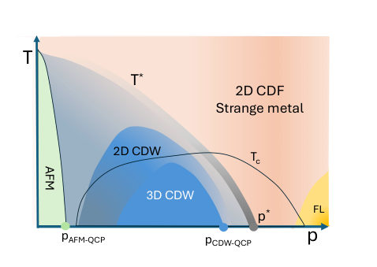
<figcaption class="paper-figure-caption"><b>Fig 1.</b> FIG. 1: Schematic phase diagram of the cuprates. p is the doping of the CuO2 planes. T ∗is the pseudogap crossover line ending at T = 0 at the doping p∗</figcaption>
</figure>
<figure class="paper-figure-card">
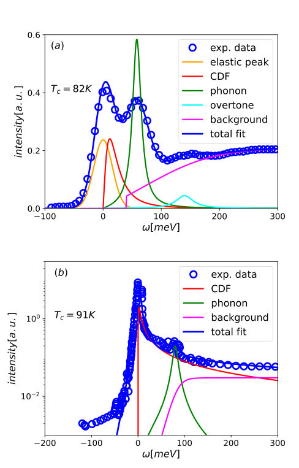
<figcaption class="paper-figure-caption"><b>Fig 2.</b> FIG. 2: High resolution RIXS spectrum (a) and EELS spec- trum (b) for Bi2212 with Tc indicated in the panels. RIXS data are from Ref. 37 whereas EELS data have been taken from Ref. 63. The experimental spectra (blue circles) are de- composed into the individual excitations (elastic peak, CDF, phonons, background) as described in the text.</figcaption>
</figure>
<figure class="paper-figure-card">

<figcaption class="paper-figure-caption"><b>Fig 3.</b> Fig.2(a) reports the RIXS response at q = qc obtained from Ref. 37 together with the CDF lineshape as a red line (the spectrum is broader since it is obtained by a convolution with an experimental resolution Gaussian of width 20 −30 meV). The magenta and the green curves</figcaption>
</figure>
<figure class="paper-figure-card">
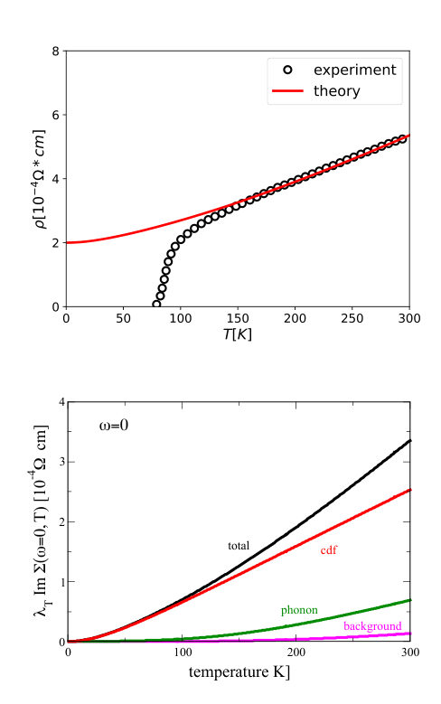
<figcaption class="paper-figure-caption"><b>Fig 4.</b> FIG. 3: Top panel: DC resistivity data (circles) for an opti- mally doped Bi2212 sample (Tc = 87K) from Ref. 72. The fit from Eq. (10) is shown by the red line with ˜λT = 0.172 · 10−4Ωcm and ρ0 = 2.0 · 10−4Ωcm. Lower panel: Individ- ual contributions from CDF (red), phonons (green) and back- ground (magenta) to the total inelastic part λT Σ′′(ω = 0, T) (black).</figcaption>
</figure>
<figure class="paper-figure-card">
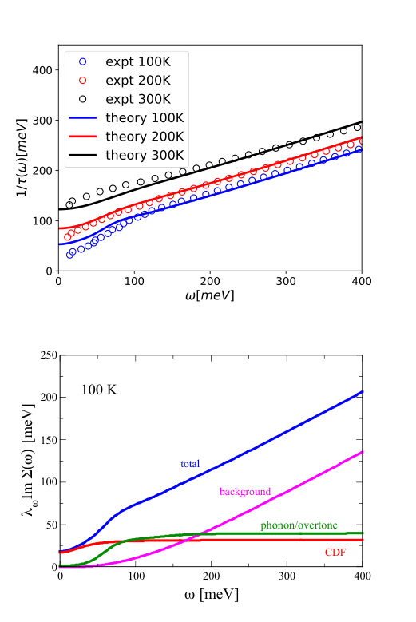
<figcaption class="paper-figure-caption"><b>Fig 5.</b> FIG. 4: Top panel: Optical scattering rate for an opti- mally doped BSCCO sample (Tc = 82 K) from Ref. 73 at 100K (black circles), 200K (red circles), and 300K (blue cir- cles) compared to the theoretical fits (lines). Parameters: λω = 2.25 meV, 1/τ0 = 35 meV. Lower panel: Individual contributions to the 100K fit of ˜λωΣ′′(ω, T)(blue) from CDF (red), phonons (green), and background (magenta).</figcaption>
</figure>
</div>

<p><strong>Summary.</strong> This paper proposes that the strange metal state in cuprates arises from itinerant fermions scattering off abundant, low-energy Charge Density Fluctuations (CDF). Using the Shrinking Fermi Liquid theory, the authors show this mechanism consistently explains linear-T resistivity and other anomalous transport properties by incorporating CDFs alongside phonons and paramagnons.</p>
<p><strong>Why it may be interesting.</strong> The detailed coupling of fermionic quasiparticles to specific bosonic fluctuations (CDF) provides a concrete mechanism for emergent non-Fermi liquid behavior in strongly correlated materials, which is highly relevant to understanding quantum critical points.</p>
<details>
<summary>Detailed structure</summary>
<p><strong>Main problem.</strong> The paper addresses the anomalous 'Strange Metal' (SM) state observed in slightly overdoped cuprates, characterized by resistivity linear in temperature, which defies standard Fermi Liquid theory.</p>
<p><strong>Main result.</strong> The SM behavior is successfully described by interpreting transport properties as scattering between itinerant fermions and low-energy Charge Density Fluctuations (CDF), leading to a consistent model for various anomalous measurements.</p>
<p><strong>Method.</strong> The authors combine theoretical modeling (Shrinking Fermi Liquid theory) with analysis of experimental data from RIXS and EELS spectroscopy.</p>
<p><strong>Model / system.</strong> The system is the cuprate superconductor, modeled by considering itinerant fermions interacting with low-energy bosonic excitations, specifically Charge Density Fluctuations (CDF), phonons, and spin paramagnons.</p>
<p><strong>Key observables.</strong> T-linear resistivity ($
ho \propto T$), specific heat coefficient ($\gamma(T)$), Seebeck coefficient ($S/T$), and magnetoresistance.</p>
<p><strong>Important parameters / regimes.</strong> Low energy scale of CDF ($\omega_{	ext{CDF}} \sim 5-10$ meV) and the finite energy scale $M/\gamma$.</p>
<p><strong>Assumptions / limitations.</strong> The core assumption for low-temperature behavior is that the CDF dissipation parameter ($\gamma$) grows logarithmically as temperature decreases when superconductivity is suppressed.</p>
<p><strong>Figures summary.</strong> Figure 2 shows RIXS and EELS spectra of Bi2212, decomposing signals to identify elastic peaks, CDFs, phonons, and paramagnon continua.</p>
<p><strong>Paper structure.</strong> The paper introduces the SM problem, identifies CDF as the key low-energy scatterer via experimental characterization (RIXS/EELS), develops the Shrinking Fermi Liquid theory framework for transport and optical properties, and finally applies this model to explain multiple anomalous thermodynamic and transport measurements across different doping regimes.</p>
</details>
<details>
<summary>Abstract</summary>
<p>We interpret the strange metal (SM) properties of slightly overdoped cuprates in terms of the recently proposed Shrinking Fermi Liquid theory. This is based on the pervading presence in the cuprate phase diagram of charge density fluctuations (CDF), which have been identified and characterized in RIXS. These fluctuations are abundant and have a low energy due to the proximity of the charge density wave quantum critical point hidden under the superconducting dome of cuprates, but have a short range and non-critical character with a finite energy M/γ~10 meV as measured above Tc. Here M~ ξ^-2 is determined by the short correlation length ξ, while γencodes the Landau damping ruling the lifetime of the charge fluctuations. Besides these low energy CDF, cuprates also display phonons and a broad continuum of particle-hole excitations, mostly due to spin paramagnons arising from their strongly correlated character. With these experimentally characterized ingredients we show that above Tc the SM properties in transport are well described in terms of fermionic Landau quasiparticles scattering with CDF and phonons. The optical properties can instead be interpreted by the combined effect of low energy CDF determining the temperature dependence, and of the paramagnon continuum determining a linear in frequency scattering rate. Remarkably, the combined effect of these simple ingredients also induces ω/T scaling properties for frequencies larger than M/γ. When superconductivity is suppressed by strong magnetic fields the SM properties extend down to a few Kelvin. By assuming that the CDF dissipation parameter γgrows logarithmically by lowering T, we account for all anomalous transport and thermodynamic properties of cuprates (specific heat, Seebeck, heat transport, resistivity, and magnetoresistance) thereby providing a consistent scenario for the SM phase of cuprates.</p>
</details>
<p><sub><a href="#top">↑ back to top</a></sub></p>

<p><a id="paper-2607.07786"></a></p>
<h3 id="chiral-tube-algebras-i-topological-defect-lines-twisted-modules-and-finite-gauging"><a href="http://arxiv.org/abs/2607.07786v1">Chiral Tube Algebras I: Topological Defect Lines, Twisted Modules, and Finite Gauging</a></h3>
<p><strong>Authors:</strong> Nathan Benjamin, Ho Tat Lam, Conghuan Luo<br>
<strong>Type:</strong> theory · <strong>Category:</strong> other · <strong>PDF:</strong> <a href="https://arxiv.org/pdf/2607.07786v1">https://arxiv.org/pdf/2607.07786v1</a><br>
<strong>Analysis basis:</strong> full PDF text, analyzed in chunks
<strong>Topic relevance:</strong> <code>analog quantum simulation</code> <strong>2/5</strong> · <code>Keldysh / 2PI / non-Gaussian methods</code> <strong>1/5</strong> · <code>correlated / nonlocal dissipation</code> <strong>1/5</strong> · <code>driven-dissipative phase transition</code> <strong>1/5</strong> · <code>entanglement &amp; information structure</code> <strong>1/5</strong> · <code>methods for driven-dissipative</code> <strong>1/5</strong></p>
<div class="figure-strip-hint">↔ Scroll figures horizontally</div>
<div class="paper-figures-scroll">
<figure class="paper-figure-card">
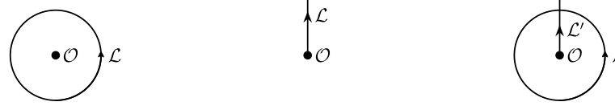
<figcaption class="paper-figure-caption"><b>Fig 1.</b> Figure 1: The left figure is the interpretation of a TDL as an operator acting on the local Hilbert space H. The middle figure is the interpretation of a TDL as a defect that twists the boundary condition and defines the defect Hilbert space HL. The right figure illustrates how a TDL maps between different defect Hilbert spaces. The bottom row is related to the top row by the conformal map z = ew, where z is the complex coordinate on the plane and w = τ + iϕ, with τ the Euclidean time and ϕ the angular coordinate on the cylinder.</figcaption>
</figure>
</div>

<p><strong>Summary.</strong> This paper introduces 'Chiral Tube Algebras' to create a unified mathematical framework bridging Chiral Algebras (local symmetries) and Topological Defect Lines (topological symmetries) within 2D CFTs. It shows how this new structure naturally describes the behavior of chiral algebras when subjected to processes like finite gauging or interaction with defects. This advances the understanding of symmetry in topological quantum field theories.</p>
<p><strong>Why it may be interesting.</strong> While highly abstract, the concept of generalizing symmetry structures from local operators to defect lines is crucial for understanding boundary conditions and topological phases in condensed matter systems, which can inform models used in AMO physics or quantum simulation.</p>
<details>
<summary>Detailed structure</summary>
<p><strong>Main problem.</strong> The paper aims to unify two complementary symmetry concepts in 2D Conformal Field Theories (CFTs): Chiral Algebras and symmetries associated with Topological Defect Lines (TDLs).</p>
<p><strong>Main result.</strong> It introduces 'Chiral Tube Algebras' as a generalized framework that incorporates TDL effects, allowing for the description of chiral algebras under finite gauging.</p>
<p><strong>Method.</strong> The authors use advanced algebraic techniques involving fusion categories, module theory, and generalizations of vertex operator algebras to construct and analyze these new algebras.</p>
<p><strong>Model / system.</strong> The theoretical setting is 2D Conformal Field Theories (CFTs), which are studied using mathematical tools like chiral currents, defect Hilbert spaces ($\mathcal{H}_L$), and tensor categories.</p>
<p><strong>Key observables.</strong> Irreducible modules of the algebras; fusion rules ($N^k_{ij}$); mapping between local and defect Hilbert spaces.</p>
<p><strong>Important parameters / regimes.</strong> The dimensionality (2D) and the nature of the symmetry (local vs. topological/non-invertible).</p>
<p><strong>Assumptions / limitations.</strong> The analysis often assumes unitary compact CFTs when dealing with chiral algebras, though the framework is designed to extend beyond these limits.</p>
<p><strong>Figures summary.</strong> Figure 1 illustrates how a TDL can be interpreted as an operator acting on the local Hilbert space or as a defect defining a twisted defect Hilbert space ($\mathcal{H}_L$).</p>
<p><strong>Paper structure.</strong> The paper progresses by first establishing the distinct roles of chiral algebras and TDLs, then proposing Chiral Tube Algebras to unify them, illustrating this unification with known examples (Kac-Moody, W algebras), and concluding with a roadmap for future work on non-local currents.</p>
</details>
<details>
<summary>Abstract</summary>
<p>Chiral algebras and topological defect lines (TDLs) represent two complementary notions of symmetry in 2d conformal field theories. In this paper, we introduce chiral tube algebras to unify and extend these two notions. Chiral tube algebras generalize chiral algebras in two ways. First, they extend the action of chiral algebras beyond the local Hilbert space to include defect Hilbert spaces twisted by TDLs. Second, they allow for non-local chiral currents attached by TDLs and thus can map between different defect Hilbert spaces, analogous to the tube algebras of TDLs. Since local chiral currents can become non-local after finite gauging, chiral tube algebras provide a natural framework for describing the image of chiral algebras under such gauging. We illustrate this framework through a variety of examples that generalize familiar chiral algebras, including Kac-Moody algebras, $\mathcal{W}$ algebras, superconformal algebras, and their orbifolds/bosonizations. We construct their irreducible modules, which are isomorphic to twisted modules of the corresponding chiral algebras, and use them to organize local and defect Hilbert spaces. In a subsequent paper, we will study chiral tube algebras generated by non-local chiral currents with fractional spins, which have no counterparts in chiral algebras.</p>
</details>
<p><sub><a href="#top">↑ back to top</a></sub></p>

<p><a id="paper-2607.07988"></a></p>
<h3 id="procrustes-tomography-reconstructing-noisy-quantum-channels-made-easy"><a href="http://arxiv.org/abs/2607.07988v1">Procrustes Tomography -- reconstructing noisy quantum channels made easy</a></h3>
<p><strong>Authors:</strong> Josey Stevens, Reece Robertson, Sebastian Deffner<br>
<strong>Type:</strong> theory · <strong>Category:</strong> quantum information and computing · <strong>PDF:</strong> <a href="https://arxiv.org/pdf/2607.07988v1">https://arxiv.org/pdf/2607.07988v1</a><br>
<strong>Analysis basis:</strong> full PDF text, analyzed in chunks
<strong>Topic relevance:</strong> <code>quantum measurements</code> <strong>2/5</strong> · <code>correlated / nonlocal dissipation</code> <strong>1/5</strong> · <code>driven-dissipative phase transition</code> <strong>1/5</strong> · <code>entanglement &amp; information structure</code> <strong>1/5</strong> · <code>methods for driven-dissipative</code> <strong>1/5</strong> · <code>non-equilibrium dynamics</code> <strong>1/5</strong></p>
<div class="figure-strip-hint">↔ Scroll figures horizontally</div>
<div class="paper-figures-scroll">
<figure class="paper-figure-card">
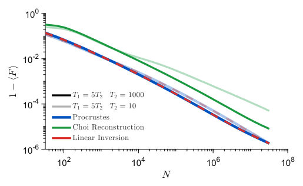
<figcaption class="paper-figure-caption"><b>Fig 1.</b> Fig. 1: Infidelity between the true and reconstructed two-qubit noisy gates as a function of the number of measurement shots with evenly distributed state measurement. Procrustes recon- struction (blue), Choi reconstruction (green), and Linear in- version (gold dashed) are plotted with high-fidelity gates for each reconstruction shown with full color saturation, and the low-fidelity implementation is plotted with reduced color satu- ration. Each method uses all 32 perfectly prepared input states required to compute the Choi reconstruction with Ni = Nj for all states.</figcaption>
</figure>
<figure class="paper-figure-card">
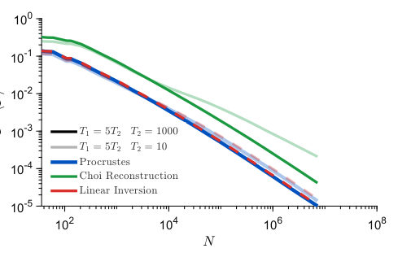
<figcaption class="paper-figure-caption"><b>Fig 2.</b> Fig. 2: Infidelity between the true and reconstructed two-qubit noisy gates as a function of the number of measurement shots with unevenly distributed state measurements. Procrustes re- construction (blue), Choi reconstruction (green), and Linear inversion (gold dashed) are plotted with high-fidelity gates for each reconstruction shown with full color saturation, and the low-fidelity implementation is plotted with reduced color satu- ration. Each method uses all 32 perfectly prepared input states required to compute the Choi reconstruction. States that have a preparation of |i⟩⟨i| are sampled at 10× the frequency than those representing |±⟩⟨±|, i.e. Ni = 10N±.</figcaption>
</figure>
<figure class="paper-figure-card">
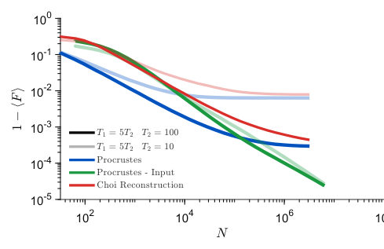
<figcaption class="paper-figure-caption"><b>Fig 3.</b> Fig. 3: Infidelity between the true and reconstructed two- qubit noisy gates as a function of the number of measurement shots with evenly distributed state measurement and imper- fect state preparation. Procrustes reconstruction (blue), Choi reconstruction (green), and Linear inversion (gold dashed) are plotted with high-fidelity gates for each reconstruction shown with full color saturation, and the low-fidelity implementation is plotted with reduced color saturation. In each case, the state preparation is performed via an efficient unitary Up that is implemented in an identical duration to the noisy process, i.e., τP = τ, and is subject to the same noisy process. Each method uses all 32...</figcaption>
</figure>
<figure class="paper-figure-card">
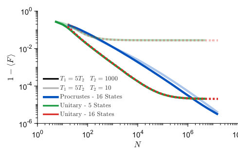
<figcaption class="paper-figure-caption"><b>Fig 4.</b> Fig. 4: Infidelity between the true and the Procrustes recon- structed two-qubit noisy gates as a function of the number of measurement shots of varying numbers of input preparations including projections onto the nearest unitary operator. Pro- crustes tomography with 16 input states is shown in blue, the unitary projected reconstruction from 5 input states (|i⟩and H⊗|0⟩) is shown in green, while the unitary projection from the reconstruction from 16 input sates is shown in gold with high fidelity gates for each reconstruction shown with full color saturation and the low fidelity implementation of plotted with reduced color saturation and their nearest unitary projection for each case...</figcaption>
</figure>
</div>

<p><strong>Summary.</strong> This paper introduces Procrustes tomography as an efficient method to characterize noisy quantum channels, addressing the computational bottleneck of quantum process tomography. By reformulating the problem as a simple least-squares minimization using input and output states, it outperforms established techniques under realistic noise conditions like uneven sampling or state preparation errors. This makes high-fidelity characterization more accessible for NISQ devices.</p>
<p><strong>Why it may be interesting.</strong> It provides a computationally tractable and robust framework for characterizing open quantum systems on near-term hardware by simplifying the complex mathematical requirements of full process tomography.</p>
<details>
<summary>Detailed structure</summary>
<p><strong>Main problem.</strong> Quantum process tomography, which characterizes noisy quantum channels, is computationally expensive, especially for NISQ devices.</p>
<p><strong>Main result.</strong> Procrustes tomography is presented as an efficient alternative that matches or exceeds the performance of established methods like Choi reconstruction and linear inversion tomography.</p>
<p><strong>Method.</strong> The method formulates channel reconstruction by minimizing the Frobenius norm between measured output states (B) and input states (A), solving for $\Lambda$ via $\Lambda = B A^+$.</p>
<p><strong>Model / system.</strong> The study focuses on characterizing noisy quantum channels ($\Lambda$) acting on qubits, often modeled using dynamics governed by the Lindblad master equation.</p>
<p><strong>Key observables.</strong> Infidelity ($1 - \langle F_{E} 
angle$), Process matrix ($\Lambda$), Choi-matrix ($
ho_{    ext{Choi}}$), and measurement probabilities.</p>
<p><strong>Important parameters / regimes.</strong> Number of independent measurement samples ($N$), relaxation times ($T_1, T_2$), and the degree of state preparation error.</p>
<p><strong>Assumptions / limitations.</strong> The analysis compares methods under conditions of finite-size sampling effects and imperfect input state preparation, requiring specific corrections for accurate results.</p>
<p><strong>Figures summary.</strong> Figures compare infidelity vs. measurement shots ($N$) for different reconstruction techniques (Procrustes vs. Choi vs. Linear Inversion) under scenarios involving uneven state sampling or input state preparation errors.</p>
<p><strong>Paper structure.</strong> The paper introduces the problem, reviews established tomography methods, develops and details Procrustes tomography, and then rigorously compares its performance against competitors using various realistic noise models (uneven sampling, state preparation errors).</p>
</details>
<details>
<summary>Abstract</summary>
<p>What is the most expensive part of quantum device characterization? Clearly, the answer is quantum process tomography. However, especially for noisy intermediate-scale quantum (NISQ) computers, a comprehensive understanding of the noisy quantum dynamics is essential in interpreting the computational output. In this work, we introduce an efficient method -- Procrustes tomography -- that outperforms established methods in a number of aspects. After a pedagogical and constructive introduction, we demonstrate the utility of the method for representative examples of noisy quantum channels.</p>
</details>
<p><sub><a href="#top">↑ back to top</a></sub></p>

<p><a id="paper-2607.08070"></a></p>
<h3 id="2m-threshold-quantum-data-hiding"><a href="http://arxiv.org/abs/2607.08070v1">(2,m)-threshold quantum data hiding</a></h3>
<p><strong>Authors:</strong> Donghoon Ha, Jeong San Kim<br>
<strong>Type:</strong> theory · <strong>Category:</strong> quantum information and computing · <strong>PDF:</strong> <a href="https://arxiv.org/pdf/2607.08070v1">https://arxiv.org/pdf/2607.08070v1</a><br>
<strong>Analysis basis:</strong> full PDF text, analyzed in chunks
<strong>Topic relevance:</strong> <code>entanglement &amp; information structure</code> <strong>2/5</strong> · <code>quantum measurements</code> <strong>2/5</strong> · <code>measurement-induced transitions</code> <strong>1/5</strong></p>
<div class="figure-strip-hint">↔ Scroll figures horizontally</div>
<div class="paper-figures-scroll">
<figure class="paper-figure-card">
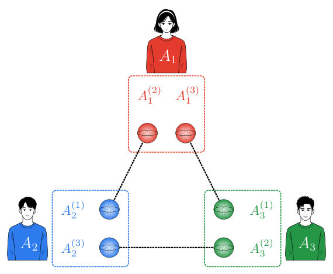
<figcaption class="paper-figure-caption"><b>Fig 1.</b> FIG. 1. Subsystems of each party when m = 3. The party A1 consists of the subsystems A(2) 1 and A(3) 1 , the party A2 consists of the subsystems A(1) 2 and A(3) 2 , and the party A3 consists of the subsystems A(1) 3 and A(2) 3 . Each pair of parties shares a two-party subsystem: A(2) 1 A(1) 2 between A1 and A2, A(3) 1 A(1) 3 between A1 and A3, and A(3) 2 A(2) 3 between A2 and A3.</figcaption>
</figure>
<figure class="paper-figure-card">
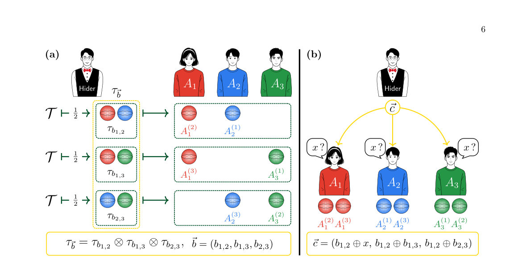
<figcaption class="paper-figure-caption"><b>Fig 2.</b> FIG. 2. (2, m)-threshold data-hiding scheme for the case m = 3 with (α, α′) = (1, 2). (a) The hider independently prepares the two-party quantum states τb1,2, τb1,3, and τb2,3 from the ensemble T , where each bit b1,2, b1,3, b2,3 ∈{0, 1} is chosen uniformly at random, and distributes the states to the corresponding pairs of parties (A1, A2), (A1, A3), and (A2, A3), respectively. (b) To hide a bit x ∈{0, 1}, the hider broadcasts the bit string ⃗c = (c1,2, c1,3, c2,3) to the parties A1, A2, and A3, where c1,2 = b1,2 ⊕x, c1,3 = b1,2 ⊕b1,3 and c2,3 = b1,2 ⊕b2,3.</figcaption>
</figure>
</div>

<p><strong>Summary.</strong> The paper introduces a $(2, m)$-threshold quantum data-hiding scheme to securely hide one classical bit among multiple parties. It proves that while any pair can perfectly recover the secret bit through joint measurement, local operations and classical communication reveal negligible information. The construction is notable because it only requires separable states, enhancing its practical feasibility.</p>
<p><strong>Why it may be interesting.</strong> This work provides a concrete cryptographic primitive (quantum data hiding) that is physically realizable using only separable states, making it highly relevant for quantum communication protocols in AMO settings where entanglement generation might be difficult.</p>
<details>
<summary>Detailed structure</summary>
<p><strong>Main problem.</strong> The paper proposes a $(2, m)$-threshold quantum data-hiding scheme for concealing one classical bit among $m$ parties.</p>
<p><strong>Main result.</strong> It demonstrates that the hidden bit can be perfectly recovered by any pair of parties via joint measurement, while local operations and classical communication (LOCC) reveal only an arbitrarily small amount of information.</p>
<p><strong>Method.</strong> The scheme is constructed using a building block ensemble based on orthogonal PPT states shared between pairs of parties, leveraging bounds derived from multipartite state discrimination theory.</p>
<p><strong>Model / system.</strong> The model involves $m$ parties sharing quantum states in a tensor product Hilbert space. The security relies on the difference between joint measurements and LOCC measurements on these multipartite states.</p>
<p><strong>Key observables.</strong> Discrimination probabilities, specifically $p_L(E)$ (LOCC) versus $p_{	ext{PPT}}(E)$, which quantifies the information leakage about the hidden bit.</p>
<p><strong>Important parameters / regimes.</strong> The threshold parameter is $(2, m)$, meaning any pair of parties can succeed in recovery. The security relies on $\epsilon > 0$ being arbitrarily small.</p>
<p><strong>Assumptions / limitations.</strong> The scheme is shown to be implementable using only separable states of low-dimensional quantum systems, avoiding the need for entanglement.</p>
<p><strong>Figures summary.</strong> Figure 1 illustrates the subsystems shared between pairs of parties for $m=3$. Figure 2 details the state preparation and broadcast bits for the $m=3$ case.</p>
<p><strong>Paper structure.</strong> The paper first establishes the general framework for multipartite quantum state discrimination, deriving bounds using PPT properties. It then constructs the $(2, m)$-threshold scheme by defining the shared states ($\vec{	au}_b$) and the classical broadcast bits ($\vec{c}$) necessary to achieve the desired security gap.</p>
</details>
<details>
<summary>Abstract</summary>
<p>We consider multiparty quantum state discrimination and present a multiparty quantum data-hiding scheme for one classical bit to be shared among multiple parties. In the proposed scheme, any pair of parties can collaborate to perfectly recover the hidden bit through a joint measurement, whereas measurements based on local operations and classical communication(LOCC) performed even by all parties reveal only an arbitrarily small amount of information. We further provide bounds on the optimal LOCC discrimination of multiparty quantum states. The proposed scheme can be implemented using only separable states of low-dimensional quantum systems, enhancing its practical feasibility.</p>
</details>
<p><sub><a href="#top">↑ back to top</a></sub></p>

<p><a id="paper-2607.07871"></a></p>
<h3 id="quantum-dot-moire-from-crossed-mos2-nanoribbons"><a href="http://arxiv.org/abs/2607.07871v1">Quantum Dot Moiré from Crossed MoS2 Nanoribbons</a></h3>
<p><strong>Authors:</strong> Xinting Shuai, Hao Zhang, Wenjing Wu, Chongning Wu, Maryam Amiri, T. A. M. Ragib Shahriar, Dian Pan, Zhi Kai Ng, Tymofii Pieshkov, Leeza Dutta, Yijun Zhou, Rohith Narra, Luke Van Leeuwen, Jishnu Murukeshan, Luyao Shi, Jiawei Lai, Atin Pramanik, Bipin Kumar Gupta, Edwin Hang Tong Teo, Robert Vajtai, Xiang Zhang, Hanyu Zhu, Shengxi Huang, Aditya D. Mohite, Pulickel M. Ajayan<br>
<strong>Type:</strong> experiment · <strong>Category:</strong> other · <strong>PDF:</strong> <a href="https://arxiv.org/pdf/2607.07871v1">https://arxiv.org/pdf/2607.07871v1</a><br>
<strong>Analysis basis:</strong> full PDF text, analyzed in chunks
<strong>Topic relevance:</strong> <code>analog quantum simulation</code> <strong>2/5</strong> · <code>driven-dissipative phase transition</code> <strong>1/5</strong> · <code>interference shaping light</code> <strong>1/5</strong> · <code>quantum optics experiment</code> <strong>1/5</strong></p>
<div class="figure-strip-hint">↔ Scroll figures horizontally</div>
<div class="paper-figures-scroll">
<figure class="paper-figure-card">
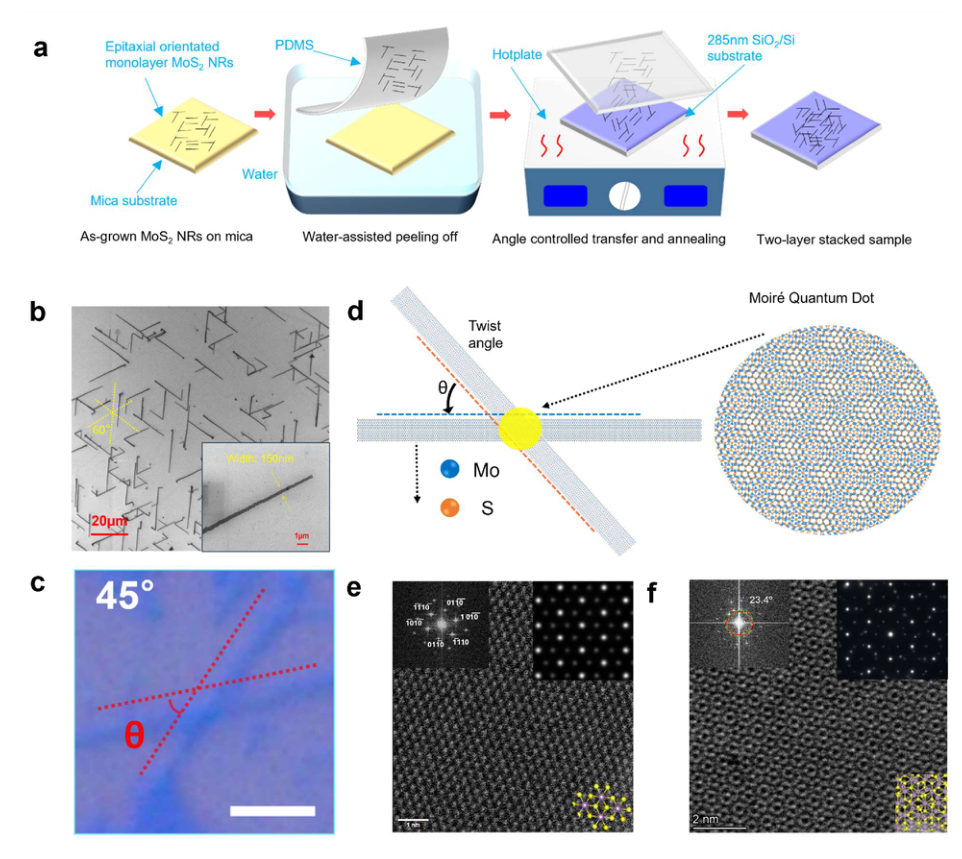
<figcaption class="paper-figure-caption"><b>Fig 1.</b> Fig. 1: Fabrication of MoS2 MQDs a, Schematic of MQDs creation through MoS2 NRs as- grown MoS2 NRs on mica, water-assisted peeling off, angle-controlled transfer and annealing and two-layer sample stack. b, SEM image of MoS2 grown on mica by CVD method, interconnected NRs have 60° or 120° angle. Inset is high magnification SEM image of single NR with 150nm width. c, Optical microscope (OM) image of MQD from two-layer NRs stacking and 45° twisting, scale bar is 2µm. d, Atomic schematic of (left) stacked MoS2 NRs and MQD with controlled twist angle θ, and (right) zoomed in Moiré pattern from MQD, blue and orange atoms are Mo and S separately. e,f, STEM image of corresponding atomic...</figcaption>
</figure>
<figure class="paper-figure-card">
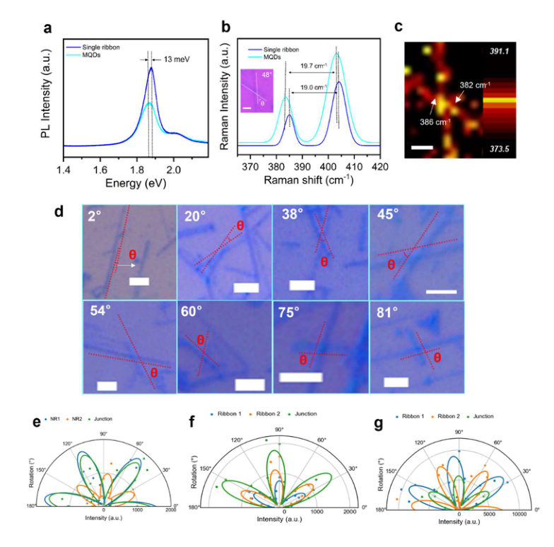
<figcaption class="paper-figure-caption"><b>Fig 2.</b> Fig. 2: Characterization of MoS2 MQDs a,b, Typical PL spectra (a) of monolayer single NR and 35° MQDs and Raman spectra (b) of monolayer single NR and 48° MQDs, showing different PL and Raman peak positions between single NR and MQDs (OM image of 48°C MDQ inset, scale bar is 1 µm). c, Raman position mapping ranges from 373 to 391.1 cm-1 with 48° MQDs, scale bar is 1µm. d, OM images of stacked MQDs from 0 to 90°, the red dashed line indicates the corresponding NR and twist angle, scale bar is 2µm. e-g, Polar plot of second harmonic generation (SHG) intensity of MQDs and NRs with 90° (e) and 53° (f) and 41° (g) twist angle; green, blue and orange colors indicate junction of MQDs, interconnect...</figcaption>
</figure>
<figure class="paper-figure-card">
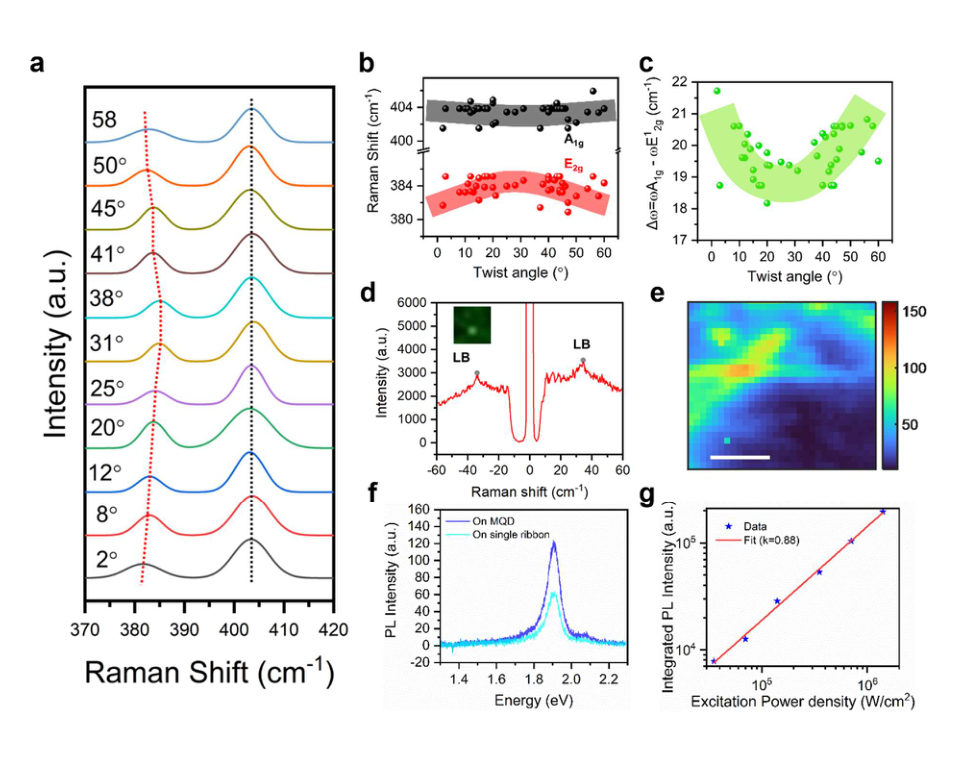
<figcaption class="paper-figure-caption"><b>Fig 3.</b> Fig. 3: Twist angle-dependence for spectroscopy of the MQDs a-c, Raman spectra (a), Raman position (𝐴ଵ௚ and 𝐸ଶ௚</figcaption>
</figure>
<figure class="paper-figure-card">
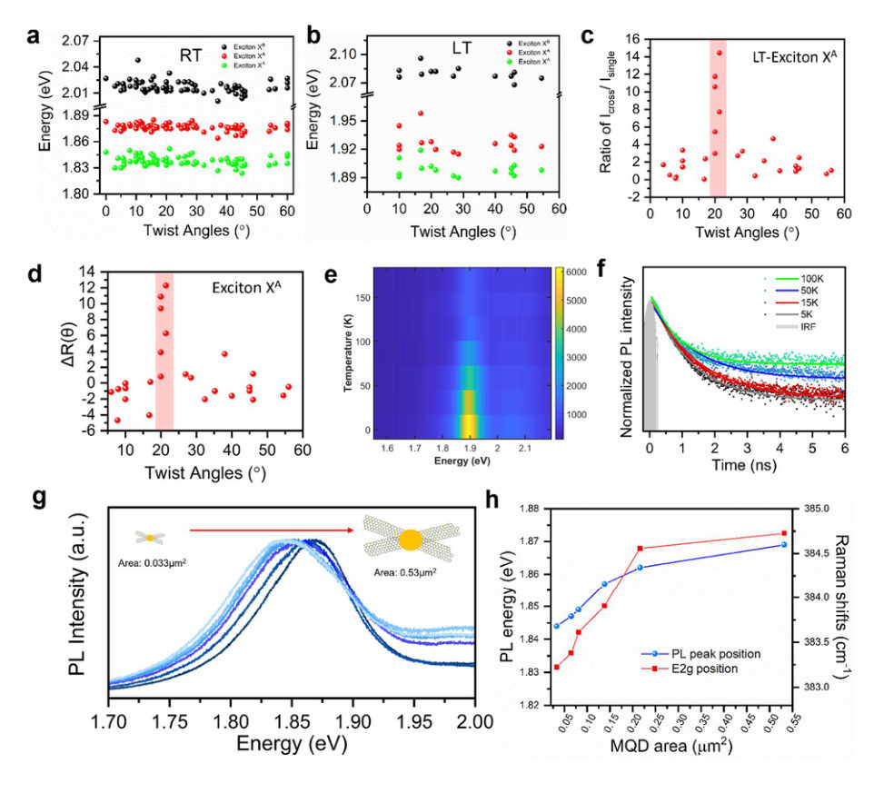
<figcaption class="paper-figure-caption"><b>Fig 4.</b> Fig. 4: Twist angle-dependence exciton behavior of the MQDs a,b, Fitted RT (a) and LT (b) PL energy position of exciton XA (red), XB (black) and trion XA- (green) as the function of twist angles (0° to 60°) on MQDs. c, Ratio of LT PL intensity on MQD and single layer (R(θ)) for exciton XA as the function of twist angles. d, Difference of PL intensity Ratio (Δ𝑅(θ)) for exciton XA on cross-section area between LT and RT as the function of twist angle. Pink columns in (c) and (d) indicate unique R(θ) and Δ𝑅(θ) values at 22±1° angle. e,f, Temperature dependent PL contour plot (e) from 3 to 170K and PL decay time (f) based in commensurate Moiré lattices at 22±1° MQD from 5 to 100 K, where XA...</figcaption>
</figure>
</div>

<p><strong>Summary.</strong> The research introduces a novel platform using stacked 1D $    ext{MoS}_2$ nanoribbons to create Moiré Quantum Dots (MQDs). By controlling the overlap angle and size, the authors demonstrate that the resulting exciton physics is highly tunable. This work advances the study of moiré phenomena by confining them to discrete quantum dot junctions.</p>
<p><strong>Why it may be interesting.</strong> This work provides an experimental realization of highly confined, tunable moiré systems, allowing for the study of quantum phenomena in a controlled, quasi-zero-dimensional geometry relevant to solid-state quantum emitters.</p>
<details>
<summary>Detailed structure</summary>
<p><strong>Main problem.</strong> To study Moiré physics in a confined geometry, moving beyond the limitations of extended 2D-2D twisted bilayers which lack intrinsic lateral confinement.</p>
<p><strong>Main result.</strong> The authors demonstrated that precise overlapping of 1D $  ext{MoS}_2$ nanoribbons forms Moiré quantum dots (MQDs) whose exciton physics is tunable by controlling the overlap angle and size.</p>
<p><strong>Method.</strong> The study involves synthesizing and deterministically stacking monolayer $  ext{MoS}_2$ nanoribbons using CVD growth followed by controlled transfer and annealing onto a substrate.</p>
<p><strong>Model / system.</strong> The physical system is Moiré Quantum Dots (MQDs) formed at the intersection of stacked 1D $ ext{MoS}_2$ nanoribbons, creating a quasi-0D quantum dot structure with tunable moiré potentials.</p>
<p><strong>Key observables.</strong> Angle-dependent exciton emission (enhanced at $22^\circ$), PL redshift dependent on size, and temperature-dependent fast radiative channels.</p>
<p><strong>Important parameters / regimes.</strong> Twist angle ($  heta$), Moiré dot size, cryogenic temperature regime.</p>
<p><strong>Assumptions / limitations.</strong> The system is treated as a quasi-0D quantum-dot system due to the 1D building blocks; edge-mediated lattice reconstruction deepens the local Moiré potential.</p>
<p><strong>Figures summary.</strong> Figures illustrate the fabrication process (SEM images of NRs, OM image of stacked MQDs) and atomic schematics confirming the stacking geometry and resulting Moiré pattern.</p>
<p><strong>Paper structure.</strong> The paper follows a structure detailing synthesis (CVD growth of 1D NRs), assembly (controlled stacking/transfer), and characterization using PL and structural microscopy to observe angle-dependent electronic properties.</p>
</details>
<details>
<summary>Abstract</summary>
<p>Twisted atomically thin layers have attracted much attention for Moiré potential and correlated quantum phenomena. However, existing Moiré superlattices have largely been limited to extensive wavefunction without lateral confinement. Here we introduce a new platform where 1D nanoribbons of 2D MoS2 grown by vapor deposition can be easily superposed at various angles from stacking and transferring, to form Moiré quantum dots at their intersections with unique exciton physics. Angle-dependent Moiré intersections show enhanced exciton emission at commensurate angle 22 deg, which demonstrates faster relaxation at the cryogenic temperature. A size-dependent study further exhibits a reduced exciton energy and soften out-of-plane interlayer coupling for smaller Moiré areas. Our results reveal exciton physics turnability via precise overlapping of 1D nanoribbons.</p>
</details>
<p><sub><a href="#top">↑ back to top</a></sub></p>

<p><a id="paper-2607.08133"></a></p>
<h3 id="communication-advantages-from-quantum-dense-network-coding"><a href="http://arxiv.org/abs/2607.08133v1">Communication Advantages from Quantum Dense Network Coding</a></h3>
<p><strong>Authors:</strong> Ian George, Brian Doolittle<br>
<strong>Type:</strong> theory · <strong>Category:</strong> quantum information and computing · <strong>PDF:</strong> <a href="https://arxiv.org/pdf/2607.08133v1">https://arxiv.org/pdf/2607.08133v1</a><br>
<strong>Analysis basis:</strong> full PDF text, analyzed in chunks
<strong>Topic relevance:</strong> <code>entanglement &amp; information structure</code> <strong>2/5</strong> · <code>methods for driven-dissipative</code> <strong>1/5</strong> · <code>non-equilibrium dynamics</code> <strong>1/5</strong></p>
<div class="figure-strip-hint">↔ Scroll figures horizontally</div>
<div class="paper-figures-scroll">
<figure class="paper-figure-card">
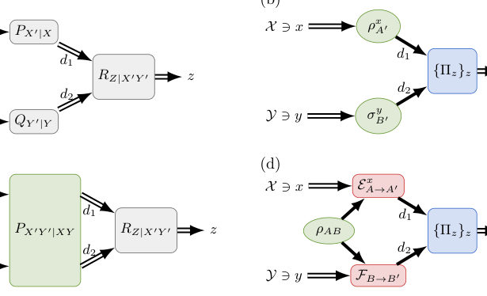
<figcaption class="paper-figure-caption"><b>Fig 1.</b> Figure 1: Examples of Multiaccess Networks with Classical Inputs and Outputs. Double-lined arrows denote classical communication and single-lined arrows denote quantum communication. Communication limited by signaling dimension di = 2ni is specified by the arrow being labeled by di. (a) Classical multiaccess network. (b) Quantum multiaccess network. (c) Nonsignaling-assisted classical multiaccess network. (d) Entanglement-assisted Quantum multiaccess network.</figcaption>
</figure>
<figure class="paper-figure-card">
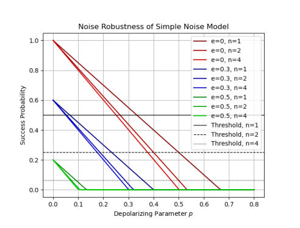
<figcaption class="paper-figure-caption"><b>Fig 2.</b> Figure 2: Noise Robustness of Communication Advantage with Heralded Loss and Depolarizing Noise. Bounds on the success probability of the receiver correctly guessing the value of ⊕2 2n are plotted. The colored lines show lower bounds on the success when each sender is allowed to send n qubits over a lossy, depolarizing channel of loss parameter e and depolarizing parameter p. These bounds follow from Theorem 3. The horizontal black lines show upper bounds on the probability of the receiver correctly guessing without both shared entanglement and quantum communication according to Theorem 2. For a chosen n, there is a quantum communication advantage so long as the colored line is above the...</figcaption>
</figure>
<figure class="paper-figure-card">
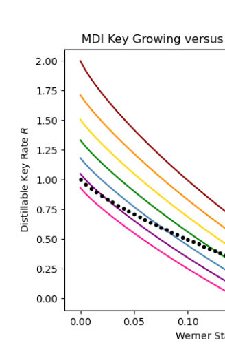
<figcaption class="paper-figure-caption"><b>Fig 3.</b> Figure 3: The asymptotic key rate of MDI QKG for Werner states ρλ = (1 −λ) Φ+ Φ+ + λ</figcaption>
</figure>
<figure class="paper-figure-card">
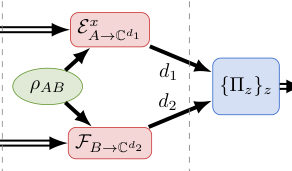
<figcaption class="paper-figure-caption"><b>Fig 4.</b> Figure 4: An example of a simultaneous message passing multiaccess network (Definition 10) with signaling dimension ⃗d = (d1, d2) as made explicit by the labeled arrows. In this case, senders 1 and 2 share entanglement through the state ρAB. They then process it conditioned on their respective inputs to send over the noiseless quantum channels to the receiver, who then measures the received joint state to output a value of z. This MN is simultaneous message passing as the two senders cannot interact and the receiver receives the entire joint state prior to having to process it.</figcaption>
</figure>
<figure class="paper-figure-card">
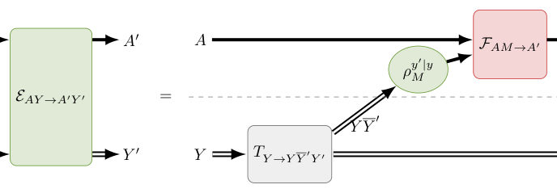
<figcaption class="paper-figure-caption"><b>Fig 5.</b> Figure 7: The channel decomposition of EAY →A′Y ′ with non-signaling restriction A ̸→Y proven in Proposition 35. The dotted grey line highlights that only classical communication needs to be transmitted.</figcaption>
</figure>
</div>

<p><strong>Summary.</strong> This paper introduces Quantum Dense Network Coding (DNC), a protocol demonstrating that quantum resources allow for significantly more efficient information transmission than classical methods. It proves this advantage is robust, requires shared entanglement and quantum links, and establishes a foundation for a new, secure quantum key growing scheme.</p>
<p><strong>Why it may be interesting.</strong> While focused on abstract coding theory, the rigorous analysis of entanglement requirements and noise robustness provides general theoretical tools applicable to characterizing resource limitations in complex open quantum systems or communication channels.</p>
<details>
<summary>Detailed structure</summary>
<p><strong>Main problem.</strong> The central problem is demonstrating how quantum resources can enable communication protocols, specifically 'quantum dense network coding' (DNC), to achieve superior efficiency compared to classical methods.</p>
<p><strong>Main result.</strong> DNC transmits function outputs using provably half the qubits per sender than classically required, an advantage that requires both shared entanglement and quantum communication. This framework also yields a novel, information-theoretically secure key growing protocol.</p>
<p><strong>Method.</strong> The authors analyze distributed computation success probabilities in various network models (Classical, Quantum, CE, QE) using MAC formalism and Weyl operators to quantify the resource advantage.</p>
<p><strong>Model / system.</strong> The study uses abstract quantum communication models involving multiaccess networks computing functions like addition modulo $2^n$. The core mechanism relies on shared maximally entangled states and generalized Bell measurements.</p>
<p><strong>Key observables.</strong> Success probability ($P_f^S$), communication advantage (quantified by success probability ratios), and the achievable key distillation rate ($R$).</p>
<p><strong>Important parameters / regimes.</strong> The advantage scales exponentially with the number of senders ($n$); security is governed by error parameters $\epsilon$ and soundness/completeness bounds.</p>
<p><strong>Assumptions / limitations.</strong> The quantum advantage critically depends on the availability of both shared entanglement and quantum communication channels; asymptotic rate calculations assume product states ($
ho_{AnBn} = 
ho^{\otimes n}_{AB}$).</p>
<p><strong>Figures summary.</strong> Figure 1 illustrates four types of multiaccess networks. Figure 2 plots the achievable success probability bounds, showing a clear quantum advantage over classical limits. Figure 3 relates to key growing rate calculations.</p>
<p><strong>Paper structure.</strong> The paper progresses from defining the communication efficiency problem (DNC) and proving its resource-dependent advantage using specific protocols ($\oplus_{2}^{2n}$), to establishing security definitions for distributed computation, and finally deriving asymptotic achievable rates for quantum key growth.</p>
</details>
<details>
<summary>Abstract</summary>
<p>A central problem in quantum information theory is understanding how quantum resources can be used to communicate information more efficiently than classical resources. We introduce quantum dense network coding -- a protocol that transmits the output of a non-Boolean function to a receiver using provably half as many qubits as bits for each sender by not transmitting the entirety of the function inputs. We show this advantage requires both shared entanglement and quantum communication, is robust to noise, and the gap in success probability between quantum and classical communication can be amplified exponentially in the number of senders. Finally, we show that dense network coding gives rise to a novel, information-theoretically secure, quantum cryptographic protocol, which we call measurement-device-independent quantum key growing.</p>
</details>
<p><sub><a href="#top">↑ back to top</a></sub></p>

<p><a id="paper-2607.08386"></a></p>
<h3 id="parallel-qec-decoding-applied-to-distributed-quantum-computing"><a href="http://arxiv.org/abs/2607.08386v1">Parallel QEC Decoding Applied to Distributed Quantum Computing</a></h3>
<p><strong>Authors:</strong> Gabriele Incardona, Davide Ferrari, Michele Amoretti<br>
<strong>Type:</strong> theory · <strong>Category:</strong> quantum information and computing · <strong>PDF:</strong> <a href="https://arxiv.org/pdf/2607.08386v1">https://arxiv.org/pdf/2607.08386v1</a><br>
<strong>Analysis basis:</strong> full PDF text, analyzed in chunks
<strong>Topic relevance:</strong> <code>entanglement &amp; information structure</code> <strong>2/5</strong> · <code>QC/QI experiment</code> <strong>1/5</strong> · <code>methods for driven-dissipative</code> <strong>1/5</strong></p>
<div class="figure-strip-hint">↔ Scroll figures horizontally</div>
<div class="paper-figures-scroll">
<figure class="paper-figure-card">
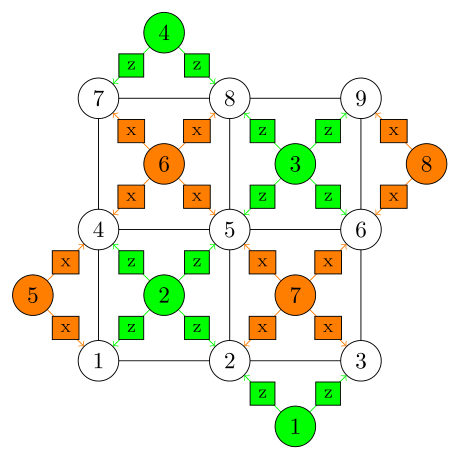
<figcaption class="paper-figure-caption"><b>Fig 1.</b> Figure 1: Distance-3 rotated planar code [2].</figcaption>
</figure>
<figure class="paper-figure-card">
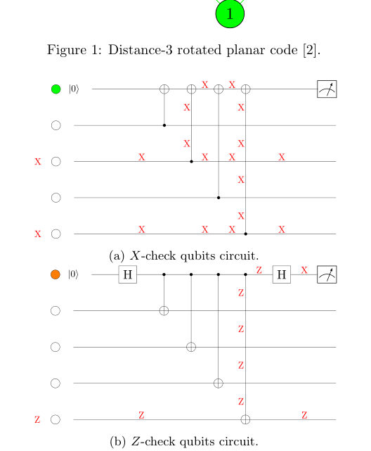
<figcaption class="paper-figure-caption"><b>Fig 2.</b> Figure 2: Stabilizing circuits for the check qubits. Error propagation examples are shown [2].</figcaption>
</figure>
<figure class="paper-figure-card">
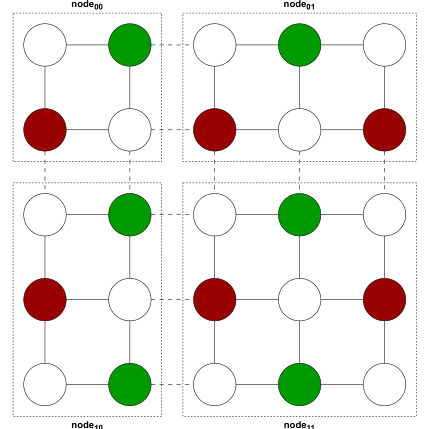
<figcaption class="paper-figure-caption"><b>Fig 3.</b> Figure 3: Representation of a 5 × 5 surface code dis- tributed across 4 QPUs. White circles are data qubits, red circles are Z-stabilizers and green circles are X- stabilizers. Solid line connections denote local interac- tions within the QPUs, while dashed lines denote non- local CNOT operations.</figcaption>
</figure>
<figure class="paper-figure-card">
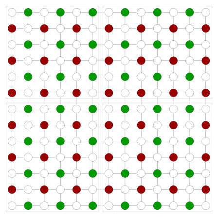
<figcaption class="paper-figure-caption"><b>Fig 4.</b> Figure 4: The 13 × 13 qubit used for most simulations.</figcaption>
</figure>
<figure class="paper-figure-card">
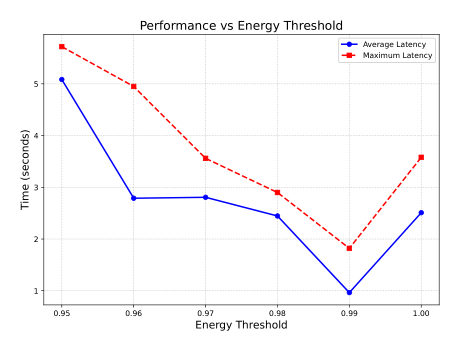
<figcaption class="paper-figure-caption"><b>Fig 5.</b> Figure 5: Execution time versus energy threshold.</figcaption>
</figure>
</div>

<p><strong>Summary.</strong> This paper proposes a novel parallel decoding strategy for QEC in distributed quantum computers by integrating Singular Value Decomposition (SVD) locally into the Belief Propagation and Ordered Statistics Decoding pipeline. The method significantly reduces computational complexity while maintaining high logical accuracy, proving that local compression is effective where global compression fails.</p>
<p><strong>Why it may be interesting.</strong> While focused on quantum computation, the techniques of dimensionality reduction via SVD applied to structured matrices (like parity checks) are relevant for analyzing complex correlation structures in many-body systems or simulating highly entangled states.</p>
<details>
<summary>Detailed structure</summary>
<p><strong>Main problem.</strong> The primary challenge is developing efficient, scalable decoding algorithms for Quantum Error Correction (QEC) when implemented on distributed quantum computing hardware.</p>
<p><strong>Main result.</strong> Applying Singular Value Decomposition (SVD) as a <em>local</em> preprocessing filter significantly improves the computational complexity and maintains high logical accuracy compared to global or non-optimized decoding methods.</p>
<p><strong>Method.</strong> The approach combines Belief Propagation (BP) for initial error estimation with Ordered Statistics Decoding (OSD), introducing SVD locally on sub-regions of the lattice to compress the error vector basis before final decoding.</p>
<p><strong>Model / system.</strong> The work models quantum computation using stabilizer codes, specifically focusing on Surface Codes implemented across a distributed network of Quantum Processing Units (QPUs) connected by quantum links.</p>
<p><strong>Key observables.</strong> Logical Accuracy (%) over 1000 trials; Computational Complexity ($O(m^3 + (n/r)^3)$); Execution Time (seconds).</p>
<p><strong>Important parameters / regimes.</strong> SVD Energy Threshold ($\epsilon$); Physical Error Rate ($  ext{perr}$); Number of QPUs ($#$ QPU); Code parameters $[[n, k, d]]$.</p>
<p><strong>Assumptions / limitations.</strong> The core assumption is that local SVD compression retains sufficient topological information for accurate decoding, unlike global compression which fails due to loss of inter-qubit correlations.</p>
<p><strong>Figures summary.</strong> Figures illustrate the planar code structure and circuits for syndrome extraction. Comparisons show performance vs. energy threshold (Table 2) and scalability vs. number of QPUs (Table 3).</p>
<p><strong>Paper structure.</strong> The paper first introduces QEC decoding bottlenecks using BP/OSD on surface codes. It then proposes the novel local SVD pre-processing step, analyzes its complexity gains over centralized methods, and finally validates performance and scalability across varying error rates and node counts.</p>
</details>
<details>
<summary>Abstract</summary>
<p>A novel parallel approach is proposed for QEC decoding based on Belief Propagation with Ordered Statistics Decoding. The main idea is to pre-process the error vectors obtained from Belief Propagation by applying Singular Value Decomposition locally to sub-regions of the lattice. The proposed approach is applied to distributed quantum computers and evaluated in terms of complexity, accuracy, and scalability.</p>
</details>
<p><sub><a href="#top">↑ back to top</a></sub></p>

<p><a id="paper-2607.07822"></a></p>
<h3 id="routing-techniques-for-error-corrected-silicon-spin-qubit-quantum-architectures"><a href="http://arxiv.org/abs/2607.07822v1">Routing Techniques for Error Corrected Silicon Spin Qubit Quantum Architectures</a></h3>
<p><strong>Authors:</strong> Julian Shen, Ludwig Schmid, Robert Wille<br>
<strong>Type:</strong> theory · <strong>Category:</strong> quantum information and computing · <strong>PDF:</strong> <a href="https://arxiv.org/pdf/2607.07822v1">https://arxiv.org/pdf/2607.07822v1</a><br>
<strong>Analysis basis:</strong> full PDF text, analyzed in chunks
<strong>Topic relevance:</strong> <code>QC/QI experiment</code> <strong>2/5</strong> · <code>exotic spin models in light-matter</code> <strong>1/5</strong> · <code>spintronics-quantum-optics interface</code> <strong>1/5</strong></p>
<div class="figure-strip-hint">↔ Scroll figures horizontally</div>
<div class="paper-figures-scroll">
<figure class="paper-figure-card">
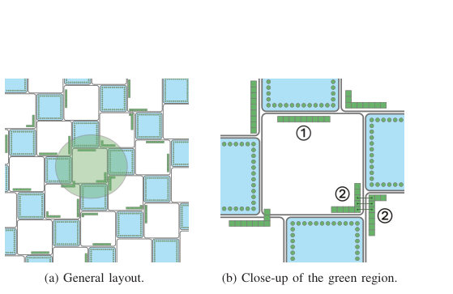
<figcaption class="paper-figure-caption"><b>Fig 1.</b> Fig. 1: Sketch of the snakes on a plane architecture [18].</figcaption>
</figure>
<figure class="paper-figure-card">
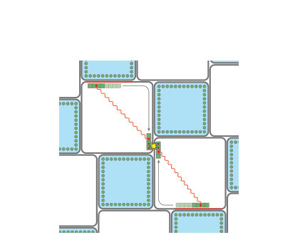
<figcaption class="paper-figure-caption"><b>Fig 2.</b> Fig. 2: Illustration of the snake surgery protocol [18].</figcaption>
</figure>
<figure class="paper-figure-card">
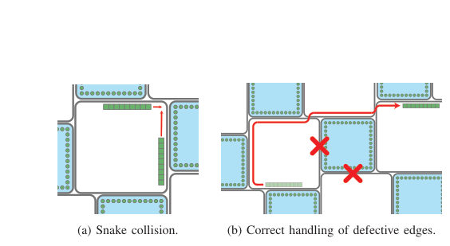
<figcaption class="paper-figure-caption"><b>Fig 3.</b> Fig. 3: Routing challenges in the snakes on a plane model [18].</figcaption>
</figure>
<figure class="paper-figure-card">
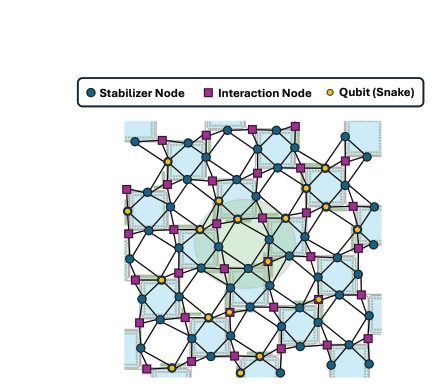
<figcaption class="paper-figure-caption"><b>Fig 4.</b> Fig. 4: The graph formalization process starting from the snakes on a plane model as shown in Fig. 1a.</figcaption>
</figure>
<figure class="paper-figure-card">
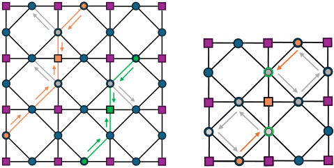
<figcaption class="paper-figure-caption"><b>Fig 5.</b> Fig. 5: Illustration of path and rotation schemes.</figcaption>
</figure>
</div>

<p><strong>Summary.</strong> This paper introduces a comprehensive framework for compiling quantum circuits onto error-corrected silicon spin qubit architectures using the 'snakes on a plane' model. It proposes and compares two novel routing algorithms—shortest-path and rotation-based—to solve the complex scheduling problem. The findings guide researchers by showing that the optimal algorithm choice depends entirely on whether the target hardware is sparse or highly dense.</p>
<p><strong>Why it may be interesting.</strong> This work provides crucial algorithmic insights into scaling quantum computation by directly addressing the complex interplay between circuit compilation, physical connectivity constraints, and fault tolerance in solid-state qubits.</p>
<details>
<summary>Detailed structure</summary>
<p><strong>Main problem.</strong> The core challenge is developing efficient compilation and routing techniques for quantum circuits onto error-corrected silicon spin qubit platforms, which must account for hardware constraints.</p>
<p><strong>Main result.</strong> The authors propose two novel routing algorithms—shortest-path and rotation-based—showing that their performance depends critically on the underlying architecture's density (sparse vs. high-density).</p>
<p><strong>Method.</strong> The work formalizes physical qubit routing as a graph path-finding problem, comparing explicit path planning against dynamic rotational scheduling techniques.</p>
<p><strong>Model / system.</strong> The system is based on silicon spin qubits implemented using the 'snakes on a plane' model, which utilizes a 2D surface code for error correction and involves shuttling logical qubits along lattice edges.</p>
<p><strong>Key observables.</strong> Mean Timesteps and Mean Movements required to execute quantum operations; scalability of runtime with increasing qubit density.</p>
<p><strong>Important parameters / regimes.</strong> Qubit density (sparse vs. high-density), defect probability ($p_{	ext{defect}}$), and the type of initial mapping strategy used.</p>
<p><strong>Assumptions / limitations.</strong> The architecture is modeled as a 2D latticework supporting surface code operations, and routing failures are handled via 'snake surgery' teleportation protocols.</p>
<p><strong>Figures summary.</strong> Figures illustrate the 'snakes on a plane' architecture, the snake surgery protocol, graph formalization of routing challenges (collisions/defects), and performance comparisons showing path vs. rotation algorithm scaling.</p>
<p><strong>Paper structure.</strong> The paper first establishes the physical model and problem gap; it then details the graph formalization and error handling protocols; finally, it compares shortest-path and rotation algorithms across various architectural settings to determine optimal routing strategies.</p>
</details>
<details>
<summary>Abstract</summary>
<p>Silicon spin qubits have emerged as a promising qubit technology due to their favorable scaling and fabrication properties. However, efficiently compiling quantum circuits onto spin qubit platforms remains challenging, particularly when accounting for hardware constraints and the high sensitivity to static defects. Existing compilation approaches for spin qubits either largely ignore error correction, despite its critical role for large-scale quantum computation, or focus on low-level schedule constructions, missing a high-level compilation and routing for logical, error-corrected algorithms. To address this gap, we introduce a compilation framework for spin qubits based on the recent snakes on a plane model, which utilizes a 2D surface code and qubit teleportation to mitigate errors. Building on this model, we propose shortest-path and rotation-based algorithms as two novel classes of qubit-routing techniques, along with additional defect-handling and initial-mapping strategies. We evaluate both algorithms across diverse architectural settings and problem sizes, demonstrating that shortest-path methods excel in sparse, low-defect scenarios, while rotation-based approaches perform better in high-density environments. The implementation is publicly available on GitHub as open source.</p>
</details>
<p><sub><a href="#top">↑ back to top</a></sub></p>

<p><a id="paper-2607.08278"></a></p>
<h3 id="emergent-topology-from-nonlocal-electronic-correlations-in-one-dimension"><a href="http://arxiv.org/abs/2607.08278v1">Emergent Topology from Nonlocal Electronic Correlations in One Dimension</a></h3>
<p><strong>Authors:</strong> Félix Fossati, Erik Linnér, Evgeny A. Stepanov<br>
<strong>Type:</strong> theory · <strong>Category:</strong> strongly correlated electrons · <strong>PDF:</strong> <a href="https://arxiv.org/pdf/2607.08278v1">https://arxiv.org/pdf/2607.08278v1</a><br>
<strong>Analysis basis:</strong> full PDF text, analyzed in chunks
<strong>Topic relevance:</strong> <code>analog quantum simulation</code> <strong>2/5</strong> · <code>Keldysh / 2PI / non-Gaussian methods</code> <strong>1/5</strong></p>
<div class="figure-strip-hint">↔ Scroll figures horizontally</div>
<div class="paper-figures-scroll">
<figure class="paper-figure-card">
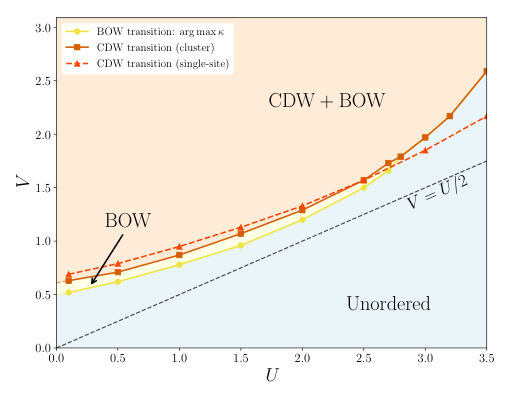
<figcaption class="paper-figure-caption"><b>Fig 1.</b> FIG. 1. The U-V phase diagram of the half-filled 1D extended Hub- bard model obtained at T = 0.1 using D-TRILEX. The CDW phase boundaries calculated within the single-site and dimer frameworks are shown in dashed and solid red curves, respectively. The mean- field estimate for the CDW transition V = U/2 is given by the dashed black line. The BOW phase boundary obtained in the dimer calcula- tion is depicted by the yellow curve.</figcaption>
</figure>
<figure class="paper-figure-card">
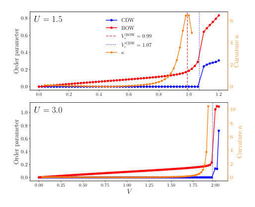
<figcaption class="paper-figure-caption"><b>Fig 2.</b> FIG. 2. Evolution of the CDW (blue markers) and BOW (red mark- ers) order parameters with nonlocal interaction V. The results are ob- tained within the dimer D-TRILEX approach for U = 1.5 (top panel) and U = 3.0 (bottom panel). The curvature κ of the BOW curve is shown in orange. VCDW c (dotted vertical blue line) marks the CDW onset. VBOW c (dashed vertical red line) corresponds to the maximum of κ(V) before the CDW sets in and is present only at U = 1.5.</figcaption>
</figure>
<figure class="paper-figure-card">
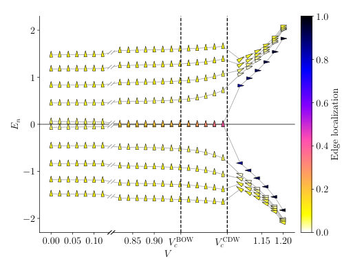
<figcaption class="paper-figure-caption"><b>Fig 3.</b> FIG. 3. Energy spectrum of Heff for a 64-site chain with open boundary conditions obtained as a function of V at U = 1.5. For clarity reasons, only a representative subset of the low-energy levels are shown and intermediate values of V are removed. Each triangle marker represents a single eigenstate: its orientation encodes the sub- lattice polarization P(n), and its color encodes the edge-localization weight |ϕ(n)|2 edge, from bulk-extended (yellow) to boundary-localized (red to black). Vertical dashed lines mark VBOW c and VCDW c .</figcaption>
</figure>
</div>

<p><strong>Summary.</strong> The authors demonstrate that nonlocal electronic correlations in 1D materials can spontaneously generate topological order by inducing Charge-Density-Wave (CDW) or Bond-Order-Wave (BOW) states. Using advanced cluster diagrammatic techniques, they map these interacting many-body phases onto effective Hamiltonians resembling the SSH and Rice-Mele models, confirming their nontrivial topological nature via edge state signatures.</p>
<p><strong>Why it may be interesting.</strong> This work provides a concrete theoretical link between interaction-driven symmetry breaking in correlated electron models and the emergence of robust topological invariants, which is highly relevant for understanding novel quantum phases in condensed matter systems.</p>
<details>
<summary>Detailed structure</summary>
<p><strong>Main problem.</strong> The study aims to establish a mechanism by which nonlocal electronic correlations can induce topological phases in low-dimensional systems, starting from an initially trivial noninteracting band structure.</p>
<p><strong>Main result.</strong> Nonlocal interactions drive the system into Bond-Order-Wave (BOW) and Charge-Density-Wave (CDW) phases, both of which possess nontrivial topological character, evidenced by localized edge states.</p>
<p><strong>Method.</strong> The research employs an advanced cluster-diagrammatic many-body approach (D-TRILEX framework) applied to the extended Hubbard model, mapping the interacting system onto effective noninteracting Hamiltonians for analysis.</p>
<p><strong>Model / system.</strong> The physical system is modeled by the one-dimensional extended Hubbard model, characterized by hopping ($t$), local repulsion ($U$), and nearest-neighbor nonlocal repulsion ($V$). The analysis focuses on the emergence of BOW and CDW phases.</p>
<p><strong>Key observables.</strong> BOW order parameter ($ ext{O}<em ext_CDW="ext{CDW">{    ext{BOW}}$), staggered charge density ($    ext{O}</em>$), effective Hamiltonian parameters ($u_k, v_k, w_k$), and edge-localization weight $|\phi_j^{	ext{edge}}|^2$.}</p>
<p><strong>Important parameters / regimes.</strong> Nonlocal interaction strength ($V$) relative to local repulsion ($U$); temperature ($T=0.1$).</p>
<p><strong>Assumptions / limitations.</strong> The single-site D-TRILEX approach fails for symmetry-broken phases due to the nonlocal nature of the order parameters, necessitating a dimer/cluster formulation.</p>
<p><strong>Figures summary.</strong> Figures illustrate phase diagrams showing coexisting CDW+BOW regions; energy spectra demonstrate the evolution from bulk states to SSH-like edge modes (BOW) and finally to RM-like gapped states (CDW).</p>
<p><strong>Paper structure.</strong> The paper progresses by first defining the model and using cluster methods to identify symmetry-broken phases. It then maps these interacting states onto effective single-particle Hamiltonians, analyzing the topological signatures (edge states) associated with both CDW and BOW order parameters.</p>
</details>
<details>
<summary>Abstract</summary>
<p>We demonstrate that electronic correlations in low-dimensional systems can induce topological phases starting from a topologically trivial noninteracting band structure. Using an advanced cluster-diagrammatic many-body approach applied to the one-dimensional extended Hubbard model, we show that tuning the nonlocal Coulomb interaction drives the emergence of bond-order-wave (BOW) and charge-density-wave (CDW) phases. Despite being interaction-driven and symmetry-broken, these states admit an effective low-energy single-particle description. In particular, the BOW phase maps onto an effective Su-Schrieffer-Heeger model, while the CDW phase, with subleading bond-order correlations, corresponds to a Rice-Mele model. Both phases exhibit a nontrivial topological character, manifested by the presence of localized edge states. Our results establish a mechanism by which nonlocal electronic correlations generate emergent topology in correlated systems.</p>
</details>
<p><sub><a href="#top">↑ back to top</a></sub></p>

<p><a id="paper-2607.08348"></a></p>
<h3 id="works-on-my-qpu-reproducibility-in-quantum-computing-research"><a href="http://arxiv.org/abs/2607.08348v1">Works on My QPU: Reproducibility in Quantum Computing Research</a></h3>
<p><strong>Authors:</strong> Dominik Köster, Maja Franz, Benjamin Zec, Nicole Hoess, Ralf Ramsauer, Wolfgang Mauerer<br>
<strong>Type:</strong> theory · <strong>Category:</strong> quantum information and computing · <strong>PDF:</strong> <a href="https://arxiv.org/pdf/2607.08348v1">https://arxiv.org/pdf/2607.08348v1</a><br>
<strong>Analysis basis:</strong> full PDF text, analyzed in chunks
<strong>Topic relevance:</strong> <code>analog quantum simulation</code> <strong>1/5</strong> · <code>correlated / nonlocal dissipation</code> <strong>1/5</strong> · <code>driven-dissipative phase transition</code> <strong>1/5</strong> · <code>entanglement &amp; information structure</code> <strong>1/5</strong> · <code>methods for driven-dissipative</code> <strong>1/5</strong> · <code>non-equilibrium dynamics</code> <strong>1/5</strong></p>
<div class="figure-strip-hint">↔ Scroll figures horizontally</div>
<div class="paper-figures-scroll">
<figure class="paper-figure-card">
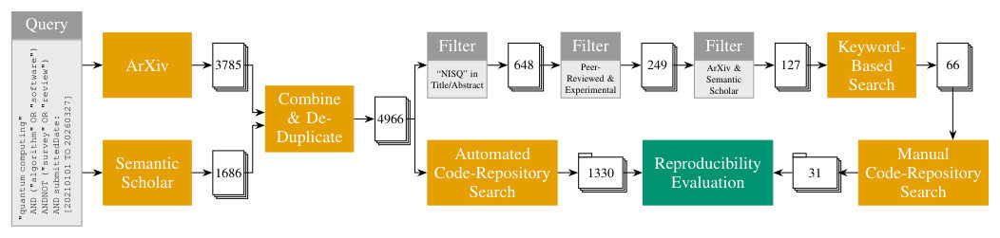
<figcaption class="paper-figure-caption"><b>Fig 1.</b> Fig. 1: Papers are retrieved via a structured query from arXiv and Semantic Scholar, merged and deduplicated. Subsequently resulting papers are either filtered through multiple stages, identified via keyword-based screening and finally subjected to manual validation, or directly submitted to automated screening for code-repositories. The results for the final reproducibility evaluation are summarised in Tab. II.</figcaption>
</figure>
</div>

<p><strong>Summary.</strong> This paper analyzes the reproducibility crisis in quantum computing research by systematically auditing thousands of published papers. It finds that code artifacts are scarce and often fail to run due to incomplete environment specifications, rather than just missing code. The authors recommend adopting declarative tools to enforce rigorous, reproducible computational environments.</p>
<p><strong>Why it may be interesting.</strong> While focused on software best practices rather than physical Hamiltonians, the discussion of complex dependency management and required environmental rigor is highly relevant to simulating or analyzing open quantum systems that rely on specific numerical libraries.</p>
<details>
<summary>Detailed structure</summary>
<p><strong>Main problem.</strong> The reproducibility of published results in quantum computing research is severely compromised by complex, evolving software stacks.</p>
<p><strong>Main result.</strong> Reproducibility is not consistently achieved; only a small fraction of papers provide executable code artifacts with complete environment specifications.</p>
<p><strong>Method.</strong> The authors conducted a combined manual and automated large-scale analysis across thousands of QC papers using a five-criterion framework (code availability, environment specification, etc.).</p>
<p><strong>Model / system.</strong> The focus is on the software workflow surrounding quantum computing algorithms, which involve logical schedules transpiled to physical QPU circuits.</p>
<p><strong>Key observables.</strong> Code availability rate (~25%), execution success rate among available code (low), and completeness of machine-readable environment specifications.</p>
<p><strong>Important parameters / regimes.</strong> The analysis uses a five-question framework: Code Availability, Environment Specification, Documentation, Hardware Description, and Executability.</p>
<p><strong>Assumptions / limitations.</strong> The study assumes that reproducibility requires capturing the full execution context, necessitating declarative environment specification tools like Nix.</p>
<p><strong>Figures summary.</strong> Figure 1 details the pipeline from a large initial corpus (4966 papers) down to the final set of manually validated NISQ-era papers (127).</p>
<p><strong>Paper structure.</strong> The paper first establishes the problem, presents the methodology involving both manual and automated screening against five criteria, quantifies the failure rates across these metrics, and concludes with practical recommendations for improvement.</p>
</details>
<details>
<summary>Abstract</summary>
<p>Quantum computing research increasingly depends on complex software stacks, yet the reproducibility of published results does not receive the priority and longevity mandated by recommendations of large international scientific bodies and best practices in software-centric systems research. In this paper, we present a combined manual and automated large-scale analysis of the reproducibility landscape in quantum computing research, quantify shortcomings, and derive actionable steps forward.   We manually evaluate a curated sample of 127 papers using a five-question framework that covers code availability, environment specification, documentation, hardware description, and executability. To place these findings in a broader context, we conduct an automated large-scale screening of nearly 5000 quantum computing papers for the same reproducibility indicators. Our manual analysis reveals that only 24.4% of the sampled papers provide code artefacts, and among those, 64.5% fail to execute successfully in a clean environment. This assessment is corroborated by a large-scale automated analysis that yields a consistent code availability rate of 26.8%. Further, it shows that approximately one-third of the papers with accessible code lack machine-readable environment specifications.   The results in this paper indicate that reproducibility is not yet consistently achieved in quantum computing research. In response, we outline a set of practical recommendations that address the observed failure modes and illustrate how reproducibility can be improved in practice.</p>
</details>
<p><sub><a href="#top">↑ back to top</a></sub></p>

<p><a id="paper-2607.07927"></a></p>
<h3 id="invariance-audits-for-quantum-kernels-and-variational-rewinding-a-real-to-hermitian-taxonomy-of-projector-flag-anchor-and-density-geometry"><a href="http://arxiv.org/abs/2607.07927v1">Invariance Audits for Quantum Kernels and Variational Rewinding: A Real-to-Hermitian Taxonomy of Projector, Flag, Anchor, and Density Geometry</a></h3>
<p><strong>Authors:</strong> Azadeh Alavi, Fatemeh Kouchmeshki, Hossein Akhoundi<br>
<strong>Type:</strong> theory · <strong>Category:</strong> other · <strong>PDF:</strong> <a href="https://arxiv.org/pdf/2607.07927v1">https://arxiv.org/pdf/2607.07927v1</a><br>
<strong>Analysis basis:</strong> full PDF text, analyzed in chunks
<strong>Topic relevance:</strong> <code>Keldysh / 2PI / non-Gaussian methods</code> <strong>1/5</strong> · <code>driven-dissipative phase transition</code> <strong>1/5</strong> · <code>entanglement &amp; information structure</code> <strong>1/5</strong> · <code>methods for driven-dissipative</code> <strong>1/5</strong></p>
<div class="figure-strip-hint">↔ Scroll figures horizontally</div>
<div class="paper-figures-scroll">
<figure class="paper-figure-card">
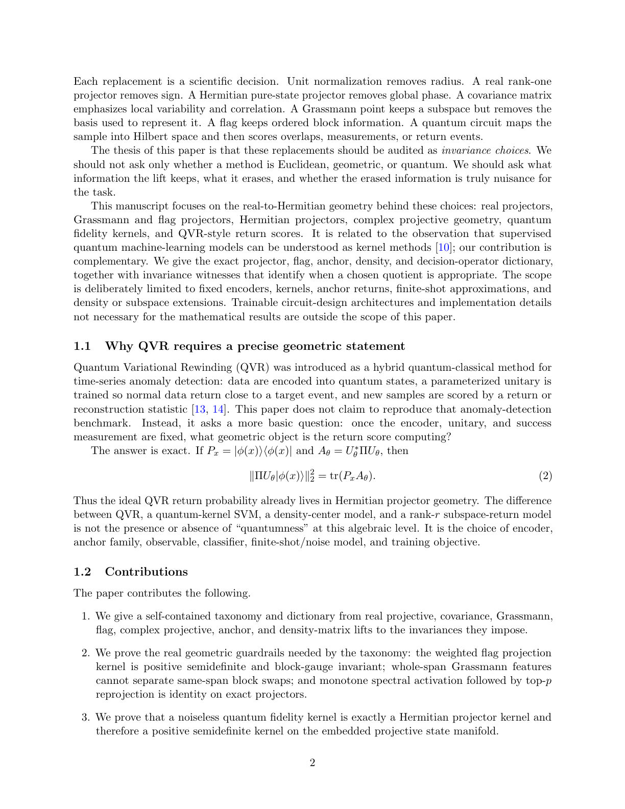
<figcaption class="paper-figure-caption"><b>Fig 1.</b> Low-resolution page preview, page 2</figcaption>
</figure>
<figure class="paper-figure-card">
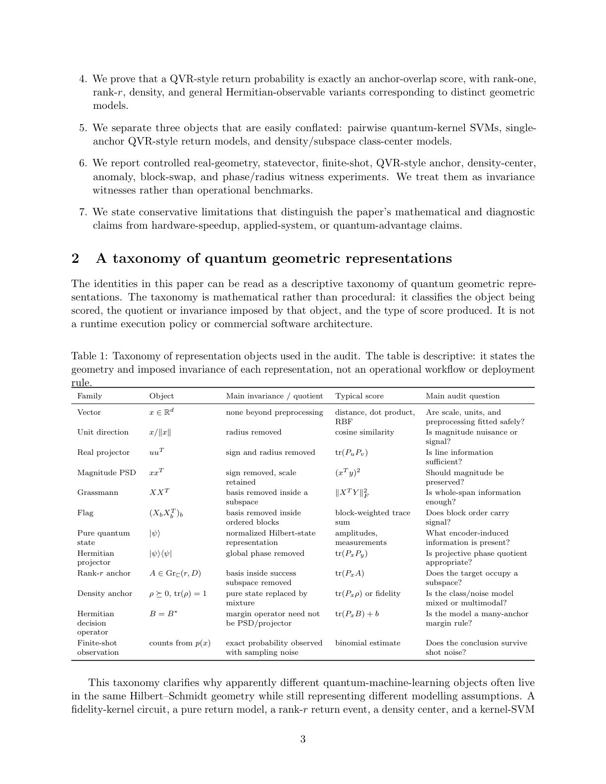
<figcaption class="paper-figure-caption"><b>Fig 2.</b> Low-resolution page preview, page 3</figcaption>
</figure>
<figure class="paper-figure-card">
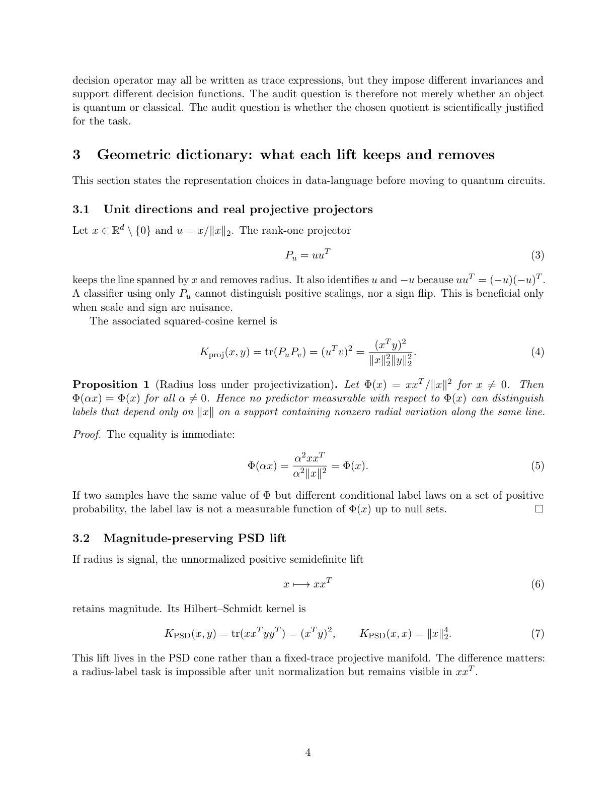
<figcaption class="paper-figure-caption"><b>Fig 3.</b> Low-resolution page preview, page 4</figcaption>
</figure>
<figure class="paper-figure-card">
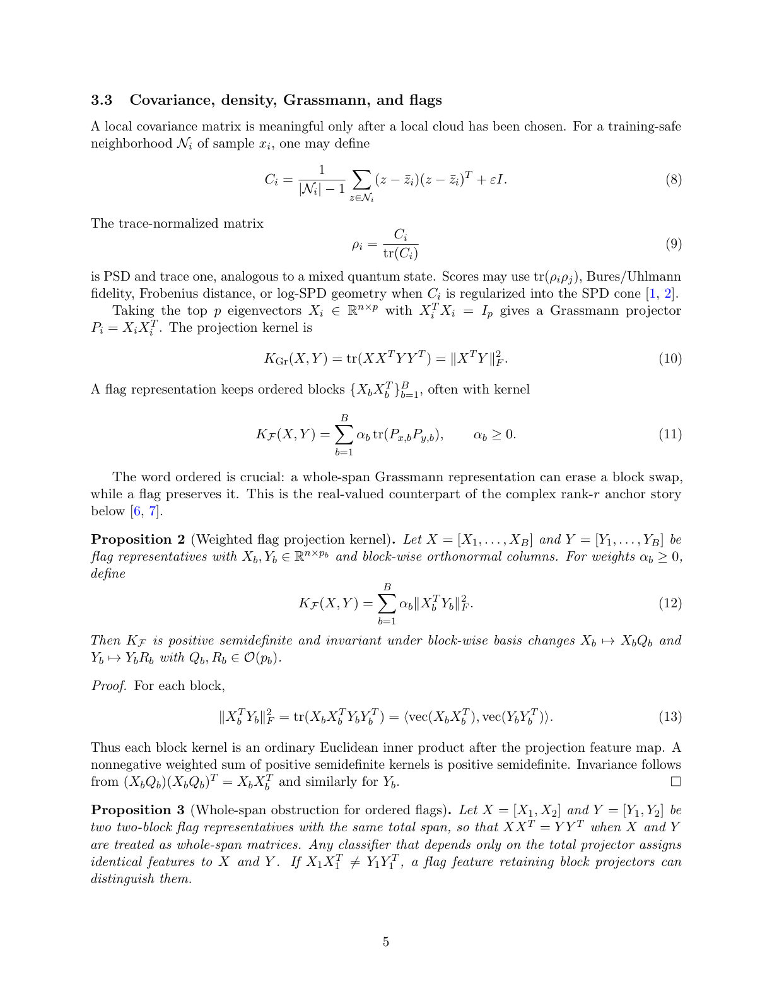
<figcaption class="paper-figure-caption"><b>Fig 4.</b> Low-resolution page preview, page 5</figcaption>
</figure>
<figure class="paper-figure-card">
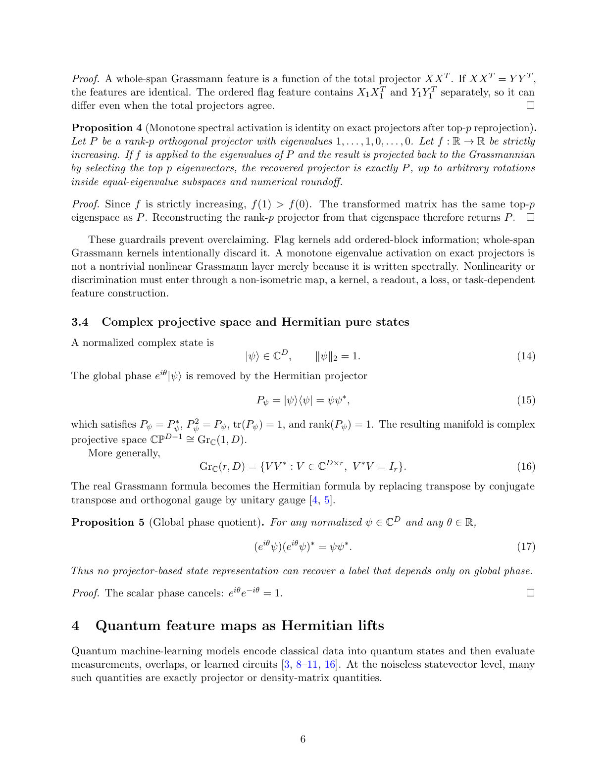
<figcaption class="paper-figure-caption"><b>Fig 5.</b> Low-resolution page preview, page 6</figcaption>
</figure>
</div>

<p><strong>Summary.</strong> This paper creates a formal taxonomy to audit the geometric assumptions made when using quantum representations (like projectors or subspaces) in machine learning. It proves that various complex quantum scoring methods are mathematically equivalent to simpler, traceable Hermitian projector overlaps. The work emphasizes that the utility of any quantum ML approach depends entirely on whether its inherent mathematical invariances match the physical symmetries of the problem being solved.</p>
<p><strong>Why it may be interesting.</strong> While not directly about AMO dynamics, the rigorous geometric analysis of quantum information structures (projectors, density matrices) provides deep mathematical tools for understanding how physical constraints manifest as computational invariances in QML applications.</p>
<details>
<summary>Detailed structure</summary>
<p><strong>Main problem.</strong> The paper addresses how machine learning models implicitly make 'invariance decisions' when replacing raw data vectors with geometric representations like projectors, subspaces, or density operators.</p>
<p><strong>Main result.</strong> It develops a formal taxonomy showing that the choice of representation dictates the imposed invariance, proving key equivalences between quantum fidelity kernels and Hermitian projector traces.</p>
<p><strong>Method.</strong> The authors develop a mathematical framework—a 'real-to-Hermitian taxonomy'—to audit these geometric lifts by comparing kernel methods (Grassmann/Flag) against variational return probability scoring mechanisms.</p>
<p><strong>Model / system.</strong> The focus is on Quantum Machine Learning (QML) representations, analyzing geometries such as the Grassmannian manifold and complex projective space ($\mathbb{CP}^{D-1}$) using projectors ($P$), density operators ($
ho$), and learned anchor matrices ($A_ heta$).</p>
<p><strong>Key observables.</strong> Invariance properties (e.g., block-gauge invariance), kernel values, QVR return probabilities ($p_	heta(x)$), and trace consistency between different scoring methods.</p>
<p><strong>Important parameters / regimes.</strong> The dimensionality of the Hilbert space ($D$), the rank of projectors ($r$), and the number of measurement shots/noise levels are key parameters in the audits.</p>
<p><strong>Assumptions / limitations.</strong> The paper explicitly states it makes no claim regarding hardware speedup or quantum advantage; all results are derived from statevector simulations using controlled, synthetic datasets as witnesses.</p>
<p><strong>Figures summary.</strong> Tables summarize comparisons across various ML tasks (e.g., classwise anchor protocols, regression performance) and provide conceptual mappings between different geometric representations and their associated invariances.</p>
<p><strong>Paper structure.</strong> The paper builds from defining the core problem of invariance decisions to developing mathematical proofs for specific kernels (Grassmann/Flag), establishing equivalences (Fidelity $\leftrightarrow$ Projector Trace), and concluding with a comprehensive taxonomy supported by multiple comparative audits.</p>
</details>
<details>
<summary>Abstract</summary>
<p>Machine-learning models often replace vectors by normalized directions, projectors, covariances, subspaces, ordered flags, quantum states, or density operators before any classifier is fitted. This replacement is an invariance decision: it determines which distinctions are kept and which are quotiented out. We develop a self-contained real-to-Hermitian taxonomy for auditing such representations in quantum machine learning. On the real side, we formalize Grassmann and flag projector kernels, prove positive semidefiniteness and block-gauge invariance of a weighted flag kernel, and give a same-span block-swap witness showing when whole-span Grassmann geometry must fail while ordered flags succeed. On the quantum side, we prove that a noiseless fidelity kernel is exactly the Hilbert--Schmidt inner product between the associated rank-one Hermitian projectors, and that a QVR-style return probability is exactly an overlap score between the input projector and a learned anchor operator. Rank-constrained returns correspond to complex Grassmann anchors, while mixed or multimodal class models are naturally represented by density or positive-semidefinite anchors. Controlled vector, subspace, statevector, anomaly, finite-shot, and quotient-witness experiments support the same conclusion: quantum and geometric lifts are useful when their invariances match the task, and fail correctly when discarded information is label-bearing. The paper makes no hardware-speedup or quantum-advantage claim.</p>
</details>
<p><sub><a href="#top">↑ back to top</a></sub></p>

<p><a id="paper-2607.07983"></a></p>
<h3 id="theoretical-ab-initio-evolution-of-satellite-intensity-near-threshold-for-cu-k-shell-transitions"><a href="http://arxiv.org/abs/2607.07983v1">Theoretical ab initio Evolution of Satellite Intensity near Threshold for Cu K-shell transitions</a></h3>
<p><strong>Authors:</strong> Daniel Pinheiro, Gonçalo Baptista, César Godinho, André Fernandes, Jorge Machado, Pedro Amaro, Nancy Paul, Martino Trassinelli, Miguel Avillez, Paul Indelicato, José Paulo Santos, Mauro Guerra<br>
<strong>Type:</strong> theory · <strong>Category:</strong> other · <strong>PDF:</strong> <a href="https://arxiv.org/pdf/2607.07983v1">https://arxiv.org/pdf/2607.07983v1</a><br>
<strong>Analysis basis:</strong> full PDF text, analyzed in chunks
<strong>Topic relevance:</strong> <code>Keldysh / 2PI / non-Gaussian methods</code> <strong>1/5</strong> · <code>correlated / nonlocal dissipation</code> <strong>1/5</strong> · <code>driven-dissipative phase transition</code> <strong>1/5</strong> · <code>methods for driven-dissipative</code> <strong>1/5</strong></p>
<div class="figure-strip-hint">↔ Scroll figures horizontally</div>
<div class="paper-figures-scroll">
<figure class="paper-figure-card">
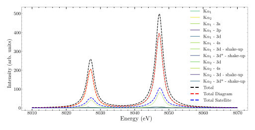
<figcaption class="paper-figure-caption"><b>Fig 1.</b> FIG. 2. Simulated Cu Kα1,2 synthetic spectrum. All satellite contributions have been included, however only the most in- tense were drawn for clarity. This simulation was performed for an infinite excitation energy.</figcaption>
</figure>
<figure class="paper-figure-card">
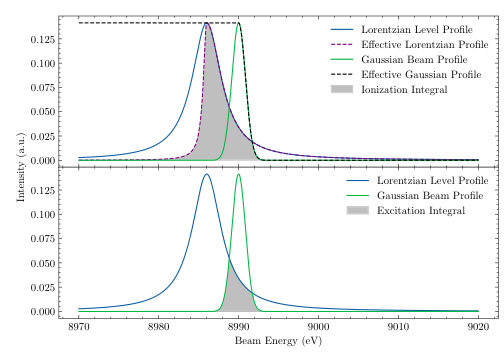
<figcaption class="paper-figure-caption"><b>Fig 2.</b> FIG. 1. Graphical representation of the overlap integral be- tween the beam Gaussian and initial level’s Lorentzian profiles calculated for the modulation of line intensity. The represen- tation for the ionization process is on the top and the excita- tion process on the bottom.</figcaption>
</figure>
<figure class="paper-figure-card">
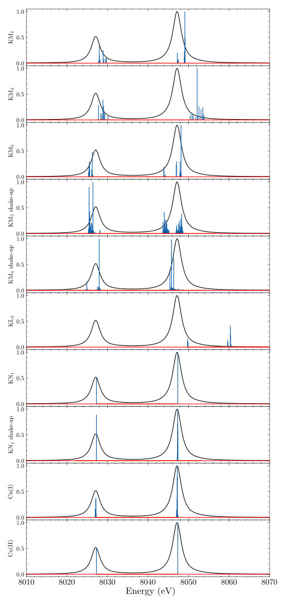
<figcaption class="paper-figure-caption"><b>Fig 3.</b> FIG. 3. Stem plots or stick spectra of some of the satellite transitions included in the simulations. Transitions for the Cu(I) and Cu(II) ions are also included, which will be impor- tant later in this work. The Cu Kα1,2 spectra is also shown in black.</figcaption>
</figure>
<figure class="paper-figure-card">
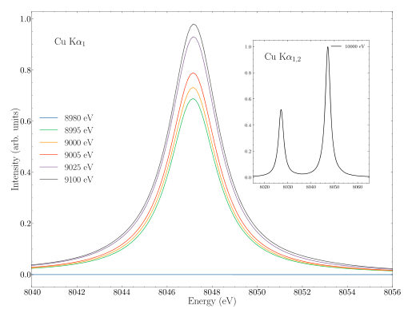
<figcaption class="paper-figure-caption"><b>Fig 4.</b> FIG. 4. Evolution of the line shape of the simulated K shell transitions, with excitation energy. The energies were chosen as the ones shown in [8].</figcaption>
</figure>
<figure class="paper-figure-card">
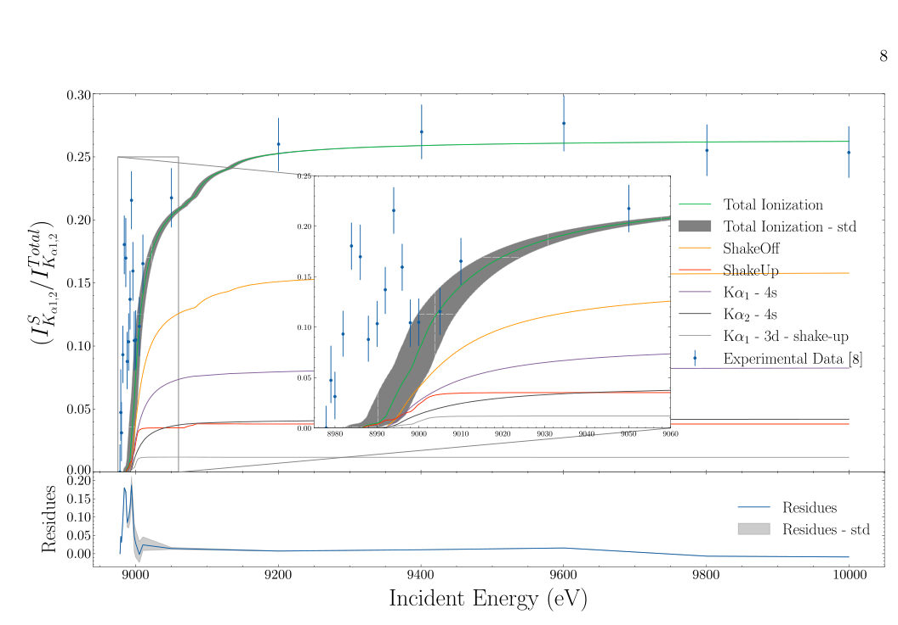
<figcaption class="paper-figure-caption"><b>Fig 5.</b> FIG. 5. Evolution of the intensity ratio of the satellite lines, respective to the total Kα1,2 intensity. The simulations were performed for experimental parameters of 0.2 eV for the beam width and 0.3 eV for the detector resolution, matching ref. [8]. Only the most intense contributions are shown for visual clarity.</figcaption>
</figure>
</div>

<p><strong>Summary.</strong> This paper theoretically models the evolution of satellite X-ray emission intensity near ionization thresholds for Copper K-shell transitions. Using sophisticated ab initio calculations, the authors demonstrate that their methods accurately predict spectral changes by accounting for shake processes originating from specific resonant excitations in oxide compounds. This provides a powerful tool for high-resolution spectroscopy.</p>
<p><strong>Why it may be interesting.</strong> This work is highly relevant as it applies advanced quantum mechanical methods to model complex many-body dynamics (shake processes) in atomic/solid-state spectra, which shares mathematical techniques with open quantum systems modeling.</p>
<details>
<summary>Detailed structure</summary>
<p><strong>Main problem.</strong> The study investigates how satellite X-ray emission intensity evolves near the ionization threshold for Cu K-shell transitions.</p>
<p><strong>Main result.</strong> Standard ab initio methods successfully simulate this intensity evolution with good agreement to experiment, identifying below-threshold satellites originating from specific resonant excitations in oxide phases.</p>
<p><strong>Method.</strong> The research employs state-of-the-art ab initio theoretical calculations using the Multiconfiguration Dirac-Fock code (MCDFGME) to model radiative and non-radiative decay processes.</p>
<p><strong>Model / system.</strong> The system under study is Copper (Cu) atoms/ions, specifically examining K-shell transitions in $   ext{Cu(I)}$ and $   ext{Cu(II)}$ oxide phases. The theoretical framework models the transition intensity by incorporating shake probabilities derived from atomic structure calculations.</p>
<p><strong>Key observables.</strong> Satellite intensity ($K\alpha_1$ and $K\alpha_2$), total decay width ($\Gamma_i$), shake probabilities (shake-off and shake-up), and spectral line shape modulation near thresholds.</p>
<p><strong>Important parameters / regimes.</strong> Ionization threshold energy, excitation energies, binding energies, and the relative contributions of different excitation channels ($1s	o 3d$, $1s	o 4p$).</p>
<p><strong>Assumptions / limitations.</strong> The calculations rely on the Sudden Approximation (SA) for shake processes; solid-state effects are noted as a potential source of discrepancy with experiment.</p>
<p><strong>Figures summary.</strong> Figures illustrate the overlap integral between beam Gaussian profiles and initial level Lorentzian profiles, and show simulated synthetic spectra for Cu K$\alpha_{1,2}$ including all satellite contributions.</p>
<p><strong>Paper structure.</strong> The paper progresses by detailing theoretical models (Thomas/Roy), implementing calculations using MCDFGME to determine transition rates and shake probabilities, modeling the energy dependence via overlap integrals, and finally comparing these simulations against experimental observations for Cu oxide species.</p>
</details>
<details>
<summary>Abstract</summary>
<p>In this work, we have investigated the evolution of satellite intensity near the ionization threshold for Cu K-shell transitions through theoretical methods. Employing standard state-of-the-art ab initio methods, we have calculated all Cu K-shell transitions and simulated the full K$α_1$ and K$α_2$ spectrum where all transition parameters, as well as shake probabilities were determined theoretically. Through these calculations we show that standard state-of-the-art ab initio methods achieve good agreement with experiment and enable us to simulate the intensity evolution near ionization thresholds within a good margin of error. Below-threshold satellite intensity was found to originate from resonant 1s$\rightarrow$3d and 1s$\rightarrow$4p excitations in Cu(I) and Cu(II) oxide phases respectively, which were included in our simulations.</p>
</details>
<p><sub><a href="#top">↑ back to top</a></sub></p>

<p><a id="paper-2607.07845"></a></p>
<h3 id="explaining-near-zero-hessian-eigenvalues-through-approximate-symmetries-in-neural-networks"><a href="http://arxiv.org/abs/2607.07845v1">Explaining Near-Zero Hessian Eigenvalues Through Approximate Symmetries in Neural Networks</a></h3>
<p><strong>Authors:</strong> Marcel Kühn, Bernd Rosenow<br>
<strong>Type:</strong> theory · <strong>Category:</strong> disordered systems and neural networks · <strong>PDF:</strong> <a href="https://arxiv.org/pdf/2607.07845v1">https://arxiv.org/pdf/2607.07845v1</a><br>
<strong>Analysis basis:</strong> full PDF text, analyzed in chunks
<strong>Topic relevance:</strong> <code>Keldysh / 2PI / non-Gaussian methods</code> <strong>1/5</strong> · <code>analog quantum simulation</code> <strong>1/5</strong> · <code>driven-dissipative phase transition</code> <strong>1/5</strong></p>
<div class="figure-strip-hint">↔ Scroll figures horizontally</div>
<div class="paper-figures-scroll">
<figure class="paper-figure-card">
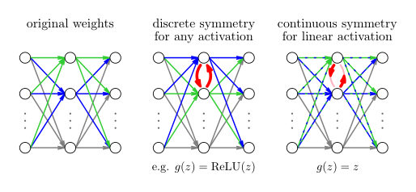
<figcaption class="paper-figure-caption"><b>Fig 1.</b> FIG. 1. Symmetries in fully connected layers. Left: original network, two hidden neurons highlighted. Middle: discrete permutation symmetry, swapping incoming and outgoing con- nections of two hidden units. Holds for any activation. Right: continuous symmetry of linear networks, an infinitesimal ro- tation of the incoming weights compensated on the outgoing weights. Preserves the output and generates a zero mode.</figcaption>
</figure>
<figure class="paper-figure-card">
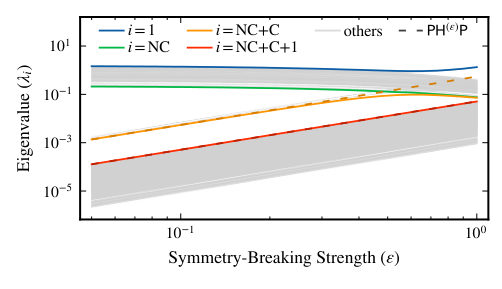
<figcaption class="paper-figure-caption"><b>Fig 2.</b> FIG. 2. Ranked Hessian eigenvalues of the two-layer Leaky- ReLU student–teacher model (N = 20, C = 3, single draw of Gaussian teacher weights W(k) ij ∼N(0, σ2) with σ2 = 1/N) as a function of the symmetry-breaking strength ε, from the linear network (ε →0) to ReLU (ε = 1). “NC+C” and “NC+C+1” are the modes bordering the gap. The bulk eigenvalues, zero at ε = 0, rise as ε2 and follow the eigen- values of the projected block PH(ε)P (dashed lines). The N rescaling zero modes stay at zero for all ε, below the plotted range. A small group of C modes (orange, the mean-gradient outliers) bends near ε ≈0.5 to merge with the large block. The clean ε2 trend without ε4 bending indicates eigenvectors...</figcaption>
</figure>
<figure class="paper-figure-card">
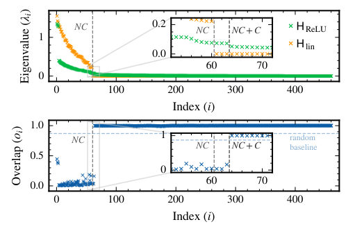
<figcaption class="paper-figure-caption"><b>Fig 3.</b> FIG. 3. Two-layer student–teacher model of Fig. 2, Hessian at the global minimum. Top: ReLU (green) and linear (orange) spectra. The linear network has NC = 60 finite eigenvalues, the ReLU network has C = 3 additional large eigenvalues due to nonzero ⟨∂θf ⊤⟩x. Bottom: overlap oi (8) between ReLU eigenvectors and the linear symmetry subspace. Small- eigenvalue modes have oi ≈1, revealing alignment with linear symmetry directions. The leading NC+C modes are strongly suppressed (random baseline orandom ≈0.87).</figcaption>
</figure>
<figure class="paper-figure-card">
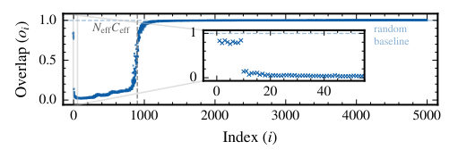
<figcaption class="paper-figure-caption"><b>Fig 4.</b> FIG. 4. Three-layer ReLU network trained on CIFAR-10, with effective dimensions Neff = 100, Ceff = 9. Overlap oi (8) between the largest 5,000 ReLU Hessian eigenvectors and the symmetry subspace P of the linear comparison model. Apart from Ceff = 9 leading outliers, only modes beyond the NeffCeff = 900 largest reach oi ≈1. The random base- line is orandom ≈0.998 (standard deviation ≈10−4), so the leading modes are suppressed by hundreds to thousands of standard deviations. The cumulative coverage (9) reaches O5000 ≈0.95, implying the unmeasured tail is almost entirely symmetric.</figcaption>
</figure>
<figure class="paper-figure-card">
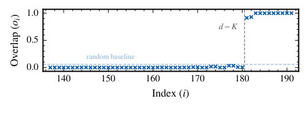
<figcaption class="paper-figure-caption"><b>Fig 5.</b> FIG. 5. Convolutional student–teacher network (10), input width 200, hidden width N = 190, kernel width K = 11, mean-squared error, Hessian at identical student/teacher pa- rameters drawn once from a Gaussian. Overlap between the eigenvectors of the nonperiodic-network Hessian and the K = 11 symmetry directions of the corresponding periodic network, for the 60 smallest eigenvalues. The random base- line is K/d ≈0.055 (dashed). Although the boundary condi- tions break the exact symmetry, the smallest K modes retain near-unity overlap.</figcaption>
</figure>
</div>

<p><strong>Summary.</strong> This work explains that the vast number of near-zero eigenvalues in neural network loss functions are not random artifacts but rather signatures of approximate continuous symmetries inherent in the network's structure. By analyzing how these symmetries are weakly broken by nonlinearities, the authors provide a deep physical understanding of low-curvature directions in ML optimization.</p>
<p><strong>Why it may be interesting.</strong> It provides a powerful analogy linking concepts from condensed matter physics—specifically Goldstone theorems related to broken continuous symmetries—to the geometry of high-dimensional machine learning loss landscapes.</p>
<details>
<summary>Detailed structure</summary>
<p><strong>Main problem.</strong> The paper addresses the mystery of near-zero eigenvalues in the Hessian matrix of a neural network's loss landscape.</p>
<p><strong>Main result.</strong> It argues that this bulk of small eigenvalues originates from pseudo-Goldstone modes associated with continuous symmetries of the network parametrization, which are only weakly broken by nonlinearities like ReLU.</p>
<p><strong>Method.</strong> The analysis involves studying the Hessian spectrum by constructing an adiabatic path between a perfectly symmetric linear limit and the full nonlinear model using perturbation theory and eigenvector overlap calculations.</p>
<p><strong>Model / system.</strong> The system is deep neural networks, analyzed through their loss function's Hessian matrix. The study progresses from simple two-layer linear models to complex convolutional architectures trained on datasets like CIFAR-10.</p>
<p><strong>Key observables.</strong> Hessian eigenvalues spectrum (large outliers vs. small bulk), overlap ($   ext{o}_i$) between eigenvectors and the symmetry subspace, and eigenvalue scaling laws ($\epsilon^2$).</p>
<p><strong>Important parameters / regimes.</strong> The perturbation strength $\epsilon$ controlling the transition from linear to nonlinear regimes; network depth and architecture (e.g., convolutional layers).</p>
<p><strong>Assumptions / limitations.</strong> The analysis assumes that symmetries are continuous and relies on comparing the Hessian at an endpoint of training rather than an exact critical point.</p>
<p><strong>Figures summary.</strong> Figures illustrate the evolution of eigenvalues as symmetry is broken ($\epsilon^2$ scaling) and show eigenvector overlap measurements comparing periodic vs. nonperiodic boundary conditions in CNNs.</p>
<p><strong>Paper structure.</strong> The paper builds its argument by first establishing exact zero modes in linear networks, then perturbing this system with ReLU to generate pseudo-Goldstone modes, and finally generalizing the diagnostic tool (overlap measurement) to complex convolutional architectures.</p>
</details>
<details>
<summary>Abstract</summary>
<p>The Hessian of the training loss governs the local geometry of the loss landscape, yet despite existing explanations for its largest eigenvalues, the origin of the vast multitude of vanishingly small eigenvalues remains elusive. We argue that the bulk consists of the weakly lifted pseudo-Goldstone modes of the continuous symmetries of the network parametrization. In deep linear networks these symmetries are exact: they generate flat directions and hence exact zero modes, whose eigenvectors we construct explicitly. Introducing a ReLU nonlinearity as a perturbation, we show that it breaks these symmetries weakly and explicitly. Resolving the spectrum at the level of eigenvectors, we find that the high-curvature directions are orthogonal to the symmetry subspace, while the bulk lies almost entirely within it. We demonstrate the mechanism in a two-layer ReLU student--teacher model and in a network trained on CIFAR-10. A convolutional example demonstrates that the same diagnostic extends beyond fully connected layers. Together, these results link the Hessian bulk to weakly broken symmetries and clarify the origin of near-zero modes.</p>
</details>
<p><sub><a href="#top">↑ back to top</a></sub></p>

<p><a id="paper-2607.08686"></a></p>
<h3 id="instability-of-the-undecidable-behavior-of-the-spectral-gap-in-1d"><a href="http://arxiv.org/abs/2607.08686v1">Instability of the undecidable behavior of the spectral gap in 1D</a></h3>
<p><strong>Authors:</strong> Laura Castilla-Castellano, Angelo Lucia<br>
<strong>Type:</strong> theory · <strong>Category:</strong> other · <strong>PDF:</strong> <a href="https://arxiv.org/pdf/2607.08686v1">https://arxiv.org/pdf/2607.08686v1</a><br>
<strong>Analysis basis:</strong> full PDF text, analyzed in chunks
<strong>Topic relevance:</strong> <code>analog quantum simulation</code> <strong>1/5</strong> · <code>driven-dissipative phase transition</code> <strong>1/5</strong> · <code>exotic spin models in light-matter</code> <strong>1/5</strong></p>
<div class="figure-strip-hint">↔ Scroll figures horizontally</div>
<div class="paper-figures-scroll">
<figure class="paper-figure-card">
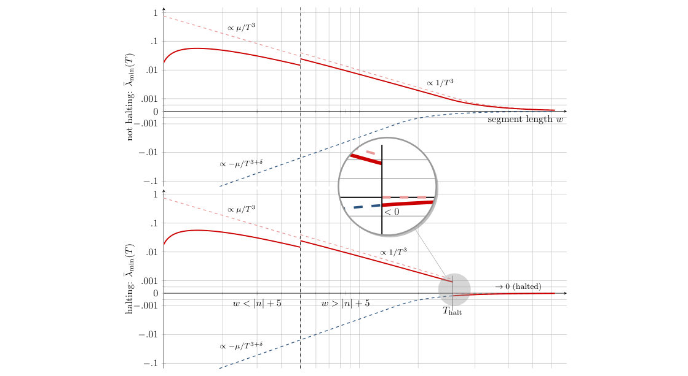
<figcaption class="paper-figure-caption"><b>Fig 1.</b> Figure 1: (Taken from [1, Section III]) Energy contribution ¯λmin(T) from a single segment of length w of the marker and TM Hamiltonian µHf + HT M shown in red, where T is the runtime of the encoded computation. The dashed red and blue lines are bounds on the contribution of both HT M and µHf, respectively.</figcaption>
</figure>
<figure class="paper-figure-card">

<figcaption class="paper-figure-caption"><b>Fig 2.</b> Figure 2: (Taken from [1]) Final spectrum of Hε N. The red lines represent the spectrum of H0, and the gray ones, from Hd. On the left, we have the gapped situation, where the gap of H0 shows. On the right, the gapless case.</figcaption>
</figure>
</div>

<p><strong>Summary.</strong> The paper investigates the decidability of the spectral gap problem for 1D quantum spin chains, building on prior work showing it could be undecidable. The authors demonstrate that this undecidability is highly unstable, proving that even an arbitrarily small, local perturbation can simplify the system such that determining if a gap exists becomes a computationally decidable problem.</p>
<p><strong>Why it may be interesting.</strong> This work directly challenges the robustness of complexity results in condensed matter theory. Showing that undecidable behavior can be eliminated by a simple local term suggests that many theoretical barriers might be artifacts of specific, non-generic constructions.</p>
<details>
<summary>Detailed structure</summary>
<p><strong>Main problem.</strong> The core problem addressed is determining whether the spectral gap (gapped vs. gapless) for a 1D lattice quantum spin system is decidable, contrasting with previous results showing undecidability.</p>
<p><strong>Main result.</strong> The authors show that the previously constructed family of Hamiltonians exhibiting undecidable behavior is extremely fragile; adding any small, local perturbation renders the spectral gap problem decidable.</p>
<p><strong>Method.</strong> The analysis involves constructing a specific 1-local, rank-1 perturbation and proving that this perturbation disrupts the fine-tuning energy coupling responsible for linking the spectral gap to an undecidable computation.</p>
<p><strong>Model / system.</strong> The system is a 1D lattice quantum spin chain described by nearest-neighbor Hamiltonians. The analysis focuses on perturbing a specific Hamiltonian family previously shown to encode Universal Turing Machine computations.</p>
<p><strong>Key observables.</strong> Spectral Gap ($\Delta$), Ground State Energy ($\lambda_0(H_N)$), and the sign of the ground state energy in the thermodynamic limit.</p>
<p><strong>Important parameters / regimes.</strong> The perturbation strength $\epsilon > 0$, which is shown to be sufficient to restore decidability regardless of its smallness.</p>
<p><strong>Assumptions / limitations.</strong> The undecidability proofs rely on boundary-induced structures (like marker symbols) that are sensitive to local perturbations, while the new result assumes a general 1D nearest-neighbor Hamiltonian structure.</p>
<p><strong>Figures summary.</strong> Figure 2 illustrates the final spectrum of the perturbed Hamiltonian ($H_{\epsilon}^N$), showing distinct spectral features for both gapped and gapless scenarios.</p>
<p><strong>Paper structure.</strong> The paper first reviews the undecidability result from [1], then details the energy amplification mechanism used in that construction, and finally introduces and analyzes a specific small perturbation to prove decidability by checking only up to a finite critical size $w_\epsilon$.</p>
</details>
<details>
<summary>Abstract</summary>
<p>The problem of determining the existence of a spectral gap in a lattice quantum spin system was previously shown to be undecidable for one [J. Bausch et al., "Undecidability of the spectral gap in one dimension", Physical Review X 10 (2020)] or more dimensions [T. S. Cubitt et al., "Undecidability of the spectral gap", Nature 528 (2015) and Forum of Mathematics Pi, 10 (2022)]. In this work, we focus on the 1-dimensional result, showing that the constructed family with undecidable behavior is extremely sensitive to perturbations. In particular, for any $\varepsilon > 0$, there exists a 1-local, rank 1, perturbation with norm $O(\varepsilon)$, such that the spectral gap problem for the family in [J. Bausch et al., "Undecidability of the spectral gap in one dimension", Physical Review X 10 (2020)] now becomes decidable.</p>
</details>
<p><sub><a href="#top">↑ back to top</a></sub></p>

<p><a id="paper-2607.08350"></a></p>
<h3 id="grokking-and-epoch-wise-double-descent-in-quantum-neural-networks"><a href="http://arxiv.org/abs/2607.08350v1">Grokking and epoch-wise double descent in quantum neural networks</a></h3>
<p><strong>Authors:</strong> Daniel Pranjić, Marco Roth, Christian Tutschku<br>
<strong>Type:</strong> both · <strong>Category:</strong> disordered systems and neural networks · <strong>PDF:</strong> <a href="https://arxiv.org/pdf/2607.08350v1">https://arxiv.org/pdf/2607.08350v1</a><br>
<strong>Analysis basis:</strong> full PDF text, analyzed in chunks
<strong>Topic relevance:</strong> <code>driven-dissipative phase transition</code> <strong>1/5</strong> · <code>methods for driven-dissipative</code> <strong>1/5</strong></p>
<div class="figure-strip-hint">↔ Scroll figures horizontally</div>
<div class="paper-figures-scroll">
<figure class="paper-figure-card">

<figcaption class="paper-figure-caption"><b>Fig 1.</b> Figure 1: a) Diagram of the dataset described in Subsection 2.1 showing random training points in two concentric circles (blue) and a ring of test points sitting closely to the SVM-defined decision boundary (green). The support vectors are highlighted in red circles. b) Sketch of a characteristic grokking loss curve with epoch-wise double descent. The model fits the train data quickly and enters the memorization phase. While the loss is effectively constant, the model weights can still change and influence other metrics, i.e. the hypothesis stability (HS). After thousands of epochs in the memorization phase, the model can show an abrupt transition, where the test error drops. This is called...</figcaption>
</figure>
<figure class="paper-figure-card">

<figcaption class="paper-figure-caption"><b>Fig 2.</b> Figure 2: Empirical observation of grokking and post-transition stability. The training history for the model in Equation 3 trained on the dataset defined in Subsection 2.1 is shown in (a). Notably, the hypothesis stability βloo undergoes a sharp drop around the grokking transition from epoch 3000 to τ + g = 5477. Parameters nl = 3, |Dtest| = |Dtrain| = 100, ε = 0.1, learning rate η = 10−3, weight decay λW = 10−5, σθ = 1. (b) Heatmap of Fourier coefficients cn1,n2(θτ) during different stages of training, τ ∈  0, τf, τ ± g , 105 . τ − g is the last epoch of the memorization phase and τ + g is the first epoch where the test error drops below 0.1.</figcaption>
</figure>
<figure class="paper-figure-card">

<figcaption class="paper-figure-caption"><b>Fig 3.</b> Figure 3: a) Barplot of the 128 independent training runs of the quantum learner for each number of layers nl ∈{1, . . . 10}. The weights θ are initialized according to a Gaussian with spread σθ = 1.0 and |Dtrain| = 100 = |Dtest|, ε = 0.1, λ = 0 and 105 epochs. For higher nl the ratio of runs with a successful generalization increases. For nl ≥7 no unsuccessful runs have been observed. b) Heatmap of the grokking ratio and c) heatmap of the comprehension ratio, both aggregated over 8 independent training runs of the quantum learner for nl = 3 and σθ = 2π, evaluated accross learning rates η ∈  10−6, 10−1</figcaption>
</figure>
<figure class="paper-figure-card">

<figcaption class="paper-figure-caption"><b>Fig 4.</b> Figure 4: Temporal dynamics of the memorization-to-generalization transition. (a) Violin plot tracking the absolute time gap log10(τg −τf) across different learning rates log10(η) ∈{−5, . . . , 0}. Joint scatter and marginal density plots mapping generalization time log10(τg) against fitting time log10(τf) under varying weight initialization scales σθ ∈{1.0, 5.0, 10.0, 20.0} for (b) weak weight decay λW = 0.1 and (c) strong weight decay λW = 1.0. The dashed black line marks synchronous learning (τg = τf), while the dotted grey line marks the boundary threshold separating comprehension from grokking (τg = 10τf).</figcaption>
</figure>
<figure class="paper-figure-card">

<figcaption class="paper-figure-caption"><b>Fig 5.</b> Figure 5: Behavior of the quantum learner evaluated over 128 independent training runs for each boundary distance parameter ε ∈{0.01, . . . 0.15} and 105 epochs. (a) Barplot detailing the distribution of learning phases. (b) Violin plot illustrating the distribution of the minimum test error from the whole training history. (c) Relative time gap ratio (τg/τf) and (d) absolute temporal delay (τg−τf) until the grokking transition, conditioned strictly on the subset of successfully generalizing runs. Note that the horizontal lines in panels (c) and (d) signify the threshold criteria distinguishing phases according to Table 1.</figcaption>
</figure>
</div>

<p><strong>Summary.</strong> This work examines grokking and double descent in Quantum Neural Networks using a 2-qubit model. The authors show that generalization relies on specific structural changes in the circuit weights, which can be mathematically tracked via Fourier analysis. By applying weak weight regularization, they provide a robust method to stabilize these quantum circuits after the initial generalization phase.</p>
<p><strong>Why it may be interesting.</strong> It connects complex concepts like quantum circuit optimization and phase transitions (grokking) to rigorous theoretical frameworks from machine learning stability theory, providing insights into how physical constraints (like real coefficients) dictate optimal computational states.</p>
<details>
<summary>Detailed structure</summary>
<p><strong>Main problem.</strong> The paper investigates grokking (delayed generalization) and epoch-wise double descent dynamics within Variational Quantum Machine Learning (QML). It seeks to understand the structural changes in quantum circuits that govern this transition.</p>
<p><strong>Main result.</strong> Grokking is observed in a 2-qubit QNN, correlating with weight-norm increases away from sparse solutions. Weak explicit weight-norm regularization successfully stabilizes the post-grokking generalization phase.</p>
<p><strong>Method.</strong> The study uses empirical observation on a 2-qubit QNN trained on concentric circle data and analyzes weight dynamics by tracking Fourier coefficients and algorithmic stability measures.</p>
<p><strong>Model / system.</strong> The model is a two-qubit Quantum Neural Network (QNN) parameterized over the SU(4) manifold, trained to classify data points near an optimal decision boundary. The training involves minimizing a regularized loss function.</p>
<p><strong>Key observables.</strong> Test error, weight-norm, algorithmic stability metric ($eta_{	ext{loo}}$), and Fourier coefficients ($c_{n1, n2}$).</p>
<p><strong>Important parameters / regimes.</strong> Circuit depth (overparameterization), learning rate, weight decay ($\lambda$), and the data margin ($\epsilon$).</p>
<p><strong>Assumptions / limitations.</strong> The analysis compares idealized mathematical constraints (e.g., purely real Fourier coefficients for step functions) with empirical training dynamics; some results rely on interpreting weight coefficient structures as indicators of generalization.</p>
<p><strong>Figures summary.</strong> Figures illustrate characteristic grokking loss curves, the evolution of phase profiles in Fourier space across training stages, and comparisons of final test error distributions with and without regularization.</p>
<p><strong>Paper structure.</strong> The paper progresses from initial empirical observation of grokking/double descent to detailed analysis using algorithmic stability theory. It then uses mathematical tools (Fourier coefficients) to characterize the structural changes underlying generalization, culminating in proposing weight-norm regularization to stabilize the final state.</p>
</details>
<details>
<summary>Abstract</summary>
<p>Grokking, the delayed transition from memorization to generalization, is a fundamental phenomenon in gradient-based learning, yet its dynamics within variational quantum machine learning (QML) remain largely unexamined. In this work, we report the empirical observation of both the grokking transition and epoch-wise double descent in a two-qubit quantum neural network (QNN) under a complete parameterization of the SU(4) manifold. We demonstrate that overparameterization via increased circuit depth improves the probability of successful generalization. Notably, these architectures frequently exhibit an epoch-wise double descent in test error, degrading at a critical epoch before recovering into a generalizing state. Crucially, we identify a generalization decay in late-stage training, where the test error increases significantly despite a stagnant training loss. Bridging this behavior with algorithmic stability theory, our analysis reveals that this decay correlates with an unconstrained increase of the weight-norm, drifting away from sparse, phase-aligned harmonic solutions toward overfitted solutions in the Hilbert space. We analyze the underlying temporal dynamics of this transition, demonstrating how the onset of generalization is linked to optimization hyperparameters such as learning rate and weight decay. Finally, to mitigate late-stage decay, we introduce a weak explicit weight-norm regularization into the loss function. We demonstrate that this structural anchor stabilizes the post-grokking phase and permanently preserves generalization gains, providing a robust framework for training overparameterized quantum circuits.</p>
</details>
<p><sub><a href="#top">↑ back to top</a></sub></p>

<p><a id="paper-2607.07833"></a></p>
<h3 id="improved-gkp-magic-states-from-error-corrected-non-gaussian-quantum-states"><a href="http://arxiv.org/abs/2607.07833v1">Improved GKP magic states from error-corrected non-Gaussian quantum states</a></h3>
<p><strong>Authors:</strong> Sharon David, Jack Davis, Ulysse Chabaud, Francesco Arzani<br>
<strong>Type:</strong> theory · <strong>Category:</strong> quantum information and computing · <strong>PDF:</strong> <a href="https://arxiv.org/pdf/2607.07833v1">https://arxiv.org/pdf/2607.07833v1</a><br>
<strong>Analysis basis:</strong> full PDF text, analyzed in chunks
<strong>Topic relevance:</strong> <code>Keldysh / 2PI / non-Gaussian methods</code> <strong>1/5</strong> · <code>entanglement &amp; information structure</code> <strong>1/5</strong></p>
<div class="figure-strip-hint">↔ Scroll figures horizontally</div>
<div class="paper-figures-scroll">
<figure class="paper-figure-card">

<figcaption class="paper-figure-caption"><b>Fig 1.</b> Figure 1. The Bloch sphere is a geometric representation of a qubit. Its antipodal points correspond to the 6 Pauli eigenstates, and their convex hull forms the stabilizer octa- hedron. There exist twelve H-type and eight F-type pure non-stabilizer “magic” states that are projections onto the surface of the sphere from the centers of the edges and faces of the octahedron, respectively.</figcaption>
</figure>
<figure class="paper-figure-card">

<figcaption class="paper-figure-caption"><b>Fig 2.</b> Figure 2. The GKP error-correction gadget corrects any ar- bitrary input state and projects it into the logical GKP code space.</figcaption>
</figure>
<figure class="paper-figure-card">

<figcaption class="paper-figure-caption"><b>Fig 3.</b> Figure 3. These figures are to be read as follows, the graphs on the left contain the success probabilities of cat states as a function of its minimum fidelity F ∗, the adjacent plots on the right are the respective positions of these cat states in phase space. (a) The success probabilities for two-legged cat states. Here we use the notation |q0, p0⟩± |q1, p1⟩to indicate the positions of the coherent states in phase space. In general the even-symmetric cat states have higher success probabilities, i.e., they have higher chances of projecting close to an H-type state. However the |2√π, 0⟩−|−2√π, 0⟩state on the GKP lattice has higher success probabilities than most odd cat states. It also...</figcaption>
</figure>
<figure class="paper-figure-card">

<figcaption class="paper-figure-caption"><b>Fig 4.</b> Figure 4. The success probability curves for Fock states. The Reed–Muller distillation threshold of F ∗&gt; 0.859, is main- tained for the protocol with Fock states. The best success probability is achieved by the optimized superposition state |Φopt,5⟩. Not only does |2⟩perform the best among the num- ber states, it also outperforms the vacuum state. The odd Fock states |1⟩and |3⟩have success probabilities lower than |0⟩. Notably, the even-symmetric |4⟩performs worse than the vacuum state, and worse than the odd-symmetric |1⟩in cer- tain regions.</figcaption>
</figure>
<figure class="paper-figure-card">

<figcaption class="paper-figure-caption"><b>Fig 5.</b> Figure 6. Log plot of NCV for different superpositions of Fock states. The superposition weights were found by minimiz- ing over the number of CV resources NCV for different min- imum fidelities F ∗. The target fidelity of the output state was set at Ftarget = 0.999. Here χopt,2 = ϕ0 |0⟩+ ϕ1 |1⟩, and χopt,3 = ϕ0 |0⟩+ ϕ1 |1⟩+ ϕ2 |2⟩, and so on. We assume per- fect syndrome extraction; therefore, experimental values are expected to differ.</figcaption>
</figure>
</div>

<p><strong>Summary.</strong> This paper investigates methods to enhance magic state generation, crucial for fault-tolerant quantum computing using bosonic systems. By applying error correction techniques designed for Gaussian states to simple non-Gaussian inputs like Fock or cat states, the authors demonstrate a significant improvement in resulting state quality. This research suggests that resource requirements can be substantially lowered by moving beyond purely Gaussian assumptions.</p>
<p><strong>Why it may be interesting.</strong> It directly addresses resource optimization in quantum computation by showing that incorporating structured non-Gaussian resources can outperform standard Gaussian assumptions used in current theoretical models for bosonic QEC.</p>
<details>
<summary>Detailed structure</summary>
<p><strong>Main problem.</strong> The research aims to improve the quality of magic states, which are essential resources for achieving fault-tolerant universal quantum computation in bosonic systems.</p>
<p><strong>Main result.</strong> Applying error correction techniques designed for Gaussian states to simple non-Gaussian input states (like cat or Fock states) significantly boosts magic state fidelity, potentially reducing distillation resource requirements by a factor of three.</p>
<p><strong>Method.</strong> The authors utilize the framework of Gottesman--Kitaev--Preskill (GKP) codes to encode logical information and then apply error correction protocols to non-Gaussian input states to generate high-fidelity magic states via distillation.</p>
<p><strong>Model / system.</strong> The work is set in bosonic quantum computation, employing GKP codes within an infinite-dimensional bosonic Hilbert space. The analysis focuses on superpositions of coherent or Fock states as the input resources for error correction.</p>
<p><strong>Key observables.</strong> Magic state fidelity (purity), required distillation cost (resource reduction factor), and Bloch vector coefficients characterizing the logical state output.</p>
<p><strong>Important parameters / regimes.</strong> The improvement factor achieved in resource requirements (e.g., a factor of 3); the specific structure of non-Gaussian input states (superpositions of coherent/Fock states).</p>
<p><strong>Assumptions / limitations.</strong> The analysis relies on applying established error correction frameworks to novel, simple non-Gaussian inputs; it assumes that avoiding projection near stabilizer states is key to improvement.</p>
<p><strong>Figures summary.</strong> Figure 1 illustrates the Bloch sphere and the stabilizer octahedron formed by Pauli eigenstates. Figure 2 depicts the GKP error-correction gadget, showing how an arbitrary input state is projected into the logical code space.</p>
<p><strong>Paper structure.</strong> The paper builds upon existing knowledge of gate teleportation and magic state distillation in bosonic systems. It introduces the methodology for using non-Gaussian states within the GKP framework to calculate improved fidelity metrics compared to purely Gaussian inputs, concluding with an analysis of the physical origin of these improvements.</p>
</details>
<details>
<summary>Abstract</summary>
<p>Gate teleportation, together with magic state distillation, is a promising route towards fault-tolerant, universal computation. In the context of bosonic quantum computation, Baragiola et al. PRL 123(20).200502 (2019) showed that within the framework of Gottesman--Kitaev--Preskill codes, encoded magic states suitable for distillation can be produced by error correcting Gaussian states, such as the vacuum. Here, we show that applying the same framework to simple non-Gaussian input states can significantly improve the quality of the magic states obtained, reducing the overall resources for the complete distillation procedure. We focus on superpositions of coherent states or Fock states, showing that many can lead to improvements in the generation of high-quality encoded magic states, which in some cases reduces the resources required for magic state distillation by about a factor $3$. We also investigate the primary source of these improvements and find that, unlike what was previously conjectured, the suitability of input states is not fully explained by symmetry arguments. Instead, the best states seem to avoid projection near stabilizer states as a result of the error correction procedure.</p>
</details>
<p><sub><a href="#top">↑ back to top</a></sub></p>

<p><a id="paper-2607.08617"></a></p>
<h3 id="large-scale-first-principle-simulations-of-amorphous-indium-oxide"><a href="http://arxiv.org/abs/2607.08617v1">Large-scale first-principle simulations of amorphous indium oxide</a></h3>
<p><strong>Authors:</strong> Matthew Bousquet, Francois Gygi, Giulia Galli<br>
<strong>Type:</strong> theory · <strong>Category:</strong> disordered systems and neural networks · <strong>PDF:</strong> <a href="https://arxiv.org/pdf/2607.08617v1">https://arxiv.org/pdf/2607.08617v1</a><br>
<strong>Analysis basis:</strong> full PDF text, analyzed in chunks
<strong>Topic relevance:</strong> <code>methods for driven-dissipative</code> <strong>1/5</strong> · <code>non-equilibrium dynamics</code> <strong>1/5</strong></p>
<div class="figure-strip-hint">↔ Scroll figures horizontally</div>
<div class="paper-figures-scroll">
<figure class="paper-figure-card">

<figcaption class="paper-figure-caption"><b>Fig 1.</b> FIG. 1. Partial radial distribution functions, gIn−In(r) (A), gIn−O(r) (B), and gO−O(r) (C), computed with first principle molecular dynamics for 80 atom amorphous samples as a function of density. Standard deviations are reported in Figure ?? and coordination numbers in Table S1, showing that In-In coordination decreases to 5.48-5.42 from the value of 6 in the crystal, and In-O coordination to 3.65-3.61, from the value of 4 in the crystal, depending on the density.</figcaption>
</figure>
<figure class="paper-figure-card">

<figcaption class="paper-figure-caption"><b>Fig 2.</b> FIG. 2. Comparison of the computed total correlation func- tion with previous results, reported in references [10, 35, 36] at ρ=7.11 g cm−3.</figcaption>
</figure>
<figure class="paper-figure-card">

<figcaption class="paper-figure-caption"><b>Fig 3.</b> FIG. 3. A: Total radial distribution function (g(r)) of a-In2O3 computed with 80 and 5120 supercells. B: Comparison between experimental [38] and computed correlation function (T(r) = 4πρr · g(r)) obtained directly in real space and as a Fourier Transform (FT) of the structure factor S (k)C: Comparison between measured and computed interference functions (see Eq. 4) Results from Ref.[10] are also shown.</figcaption>
</figure>
<figure class="paper-figure-card">

<figcaption class="paper-figure-caption"><b>Fig 4.</b> FIG. 4. Histogram of O-O bond lengths for samples generated by our MLIP at ρ = 7.11 g · cm −3. The mean distance is 1.49 ± 0.04 ˚A for 80 and 640 atom cells and 1.50 ± 0.05 ˚A for the 5120 cell.</figcaption>
</figure>
<figure class="paper-figure-card">

<figcaption class="paper-figure-caption"><b>Fig 5.</b> FIG. 6. Panel A shows the vibrational density of states (VDOS) for 80 atom samples of a-In2O3 with and without an O-O bond and the VDOS of a 640 atom sample with 4 O-O bonds and one without 0 O-O bonds. The peak around ∼850 cm−1 is attributed to the short (∼1.50 ˚A) peroxide bond. Panel B shows Raman spectra computed at the LDA level of theory for a 80 atom cell with and without an O-O bond. The mode near ∼850 cm−1 is Raman-active, and cor- responds to the O-O bond</figcaption>
</figure>
</div>

<p><strong>Summary.</strong> This work uses advanced machine learning interatomic potentials to simulate massive amorphous indium oxide structures. It reveals that structural features like edge-sharing polyhedra and peroxide-like O-O bonds are responsible for the material's high electron mobility and intrinsic n-type doping. The findings provide a detailed structure-property roadmap for improving its use in energy devices.</p>
<p><strong>Why it may be interesting.</strong> While focused on solid-state physics, the use of machine learning potentials trained on first principles to simulate large disordered systems falls directly into the realm of ML-physics applied to complex materials, which is relevant for understanding emergent properties in disordered quantum matter.</p>
<details>
<summary>Detailed structure</summary>
<p><strong>Main problem.</strong> The study aims to resolve the structural motifs responsible for the high electron mobility and the existence of peroxide-like bonds in amorphous indium oxide (a-In2O3).</p>
<p><strong>Main result.</strong> The research establishes a comprehensive structure-property picture, showing that extended InOx chains and O-O peroxide-like bonds provide the basis for high electron mobility and intrinsic n-type doping.</p>
<p><strong>Method.</strong> A MACE-based machine-learned interatomic potential was developed and used to simulate large amorphous supercells (up to 5120 atoms) via first-principles molecular dynamics.</p>
<p><strong>Model / system.</strong> The physical system is amorphous indium oxide (a-In2O3), a high-electron-mobility semiconductor crucial for thin-film transistors. The simulations model the structural disorder and defect chemistry inherent in the amorphous state.</p>
<p><strong>Key observables.</strong> X-ray structure factors, partial radial distribution functions (RDFs), vibrational spectra (Raman/IR), localized in-gap electronic states near the conduction band minimum.</p>
<p><strong>Important parameters / regimes.</strong> Mean O-O bond length of 1.5 Å; supercell sizes up to 5120 atoms; energy differences between amorphous and crystalline phases.</p>
<p><strong>Assumptions / limitations.</strong> The use of a MACE potential trained on first-principles data assumes the accuracy of the underlying DFT functionals (SCAN meta-GGA).</p>
<p><strong>Figures summary.</strong> Figures likely compare calculated X-ray structure factors to experimental data, show RDFs confirming bond lengths, and display Raman spectra highlighting a distinct feature near 850 cm-1 associated with O-O bonds.</p>
<p><strong>Paper structure.</strong> The paper progresses by first developing the large-scale ML potential, then using it for structural characterization (RDFs, structure factors), followed by electronic analysis to identify defect states, and finally correlating these structural/electronic findings with measurable optical signatures like Raman scattering.</p>
</details>
<details>
<summary>Abstract</summary>
<p>Amorphous indium oxide (a-In$_2$O$_3$) is a high-electron-mobility semiconductor of central importance in thin-film transistors and a promising photoanode for solar-driven water oxidation. Despite sustained experimental and computational investigations, the structural motifs underlying its unusual transport properties and the existence of O-O peroxide-like bonds within its network have remained unresolved. Here we develop a MACE-based machine-learned interatomic potential trained on first-principles molecular dynamics trajectories and use it to generate and analyze amorphous structures containing up to 5120 atoms, two orders of magnitude larger than those adopted in typical ab initio studies. We find X-ray structure factors in excellent quantitative agreement with experiment and we confirm that In$_2$O$_3$ is a poor glass former, with the likely presence of quasi-crystalline regions in amorphous samples. Our large-scale structural analysis reveals extended chains of edge-sharing InO$_k$ polyhedra providing a concrete structural basis for the high electron mobility of a-In$_2$O$_3$. Our results strongly support the formation of O-O peroxide-like bonds in the amorphous network, with a mean length of 1.5 Å. We show that these bonds introduce localized in-gap states near the conduction band minimum, acting as a source of intrinsic n-type self-doping and enhancing sub-gap optical absorption. These effects are detectable via a distinct Raman feature near 850 cm$^{-1}$ that is absent in the IR spectrum. Overall, our results establish a comprehensive structure-property picture of a-In$_2$O$_3$, provide directly testable experimental predictions, and suggest that controlled amorphization is a viable strategy for improving the photoelectrochemical activity of a-In$_2$O$_3$.</p>
</details>
<p><sub><a href="#top">↑ back to top</a></sub></p>

<p><a id="paper-2607.08626"></a></p>
<h3 id="a-nonstabilizerness-resource-law-for-universal-quantum-state-purification"><a href="http://arxiv.org/abs/2607.08626v1">A Nonstabilizerness Resource Law for Universal Quantum State Purification</a></h3>
<p><strong>Authors:</strong> Keming He, Enji Xiong, Xin Wang<br>
<strong>Type:</strong> theory · <strong>Category:</strong> quantum information and computing · <strong>PDF:</strong> <a href="https://arxiv.org/pdf/2607.08626v1">https://arxiv.org/pdf/2607.08626v1</a><br>
<strong>Analysis basis:</strong> full PDF text, analyzed in chunks
<strong>Topic relevance:</strong> <code>entanglement &amp; information structure</code> <strong>1/5</strong></p>
<div class="figure-strip-hint">↔ Scroll figures horizontally</div>
<div class="paper-figures-scroll">
<figure class="paper-figure-card">

<figcaption class="paper-figure-caption"><b>Fig 1.</b> Fig 1. Schematic illustration of the role of magic in universal quantum state purification. Starting from noisy copies, clas- sically simulable operations remain at the zero-gain bound- ary, operations with limited magic yield moderate purifica- tion, and operations with larger magic can reach stronger fi- delity improvement.</figcaption>
</figure>
<figure class="paper-figure-card">

<figcaption class="paper-figure-caption"><b>Fig 2.</b> Fig 2. Resource laws for two-copy universal purification at δ = 0.5. The exponentiated mana and the robustness bounds grow linearly with the fidelity gain f −λ0. In panel (b), shaded regions indicate the intervals between lower and up- per robustness bounds.</figcaption>
</figure>
<figure class="paper-figure-card">

<figcaption class="paper-figure-caption"><b>Fig 3.</b> Fig 3. Parameter space structure of the successful purification map for odd-dimensional universal purification at δ = 0.5 and d = 3. The background color shows 2MDδ (2,f,p,3) −1, and the contour lines show the success probability p. The point (t, s) = (1, 1) is the preimage of the golden point. Inset: retained branch weights at s = 1, where qsym := 2(µ1+µ2) = s and qasym := 2(µ1−µ2) = s(1−t)/(1+t). Increasing t suppresses the antisymmetric branch and in- creases both the fidelity gain and the magic of the selected operation.</figcaption>
</figure>
</div>

<p><strong>Summary.</strong> This paper develops a quantitative theory showing that universal quantum state purification requires a specific amount of 'magic' resource. It proves exact linear laws connecting this required magic (measured by mana or robustness) directly to the achievable fidelity gain beyond what is possible classically. This establishes a fundamental, measurable resource constraint for fault-tolerant quantum information processing.</p>
<p><strong>Why it may be interesting.</strong> The quantitative link between fundamental resource measures (magic/nonstabilizerness) and achievable performance metrics like fidelity is crucial for designing fault-tolerant quantum computation protocols, providing rigorous theoretical limits.</p>
<details>
<summary>Detailed structure</summary>
<p><strong>Main problem.</strong> The paper establishes a quantitative resource law governing quantum state purification, aiming to determine the minimum 'magic' (nonstabilizerness) required to achieve high fidelity from noisy copies.</p>
<p><strong>Main result.</strong> It proves exact linear laws relating the required mana (for odd dimensions) and robustness (for multi-qubit systems) to the achievable fidelity gain over the unpurified state.</p>
<p><strong>Method.</strong> The analysis uses resource theories, specifically defining 'mana' and 'robustness,' and employs advanced mathematical techniques involving Semidefinite Programming formulations and structural decomposition of stabilizer states.</p>
<p><strong>Model / system.</strong> The model involves purifying a quantum state $|\psi
angle$ corrupted by depolarizing noise ($ ext{D}_\delta$) using $n=2$ noisy copies. The analysis covers both odd-dimensional qudit systems and general multi-qubit systems.</p>
<p><strong>Key observables.</strong> Fidelity ($f$), Success Probability ($p$), Mana ($ ext{M}$), Robustness ($   ext{R}$), and the fidelity gain ($f - \lambda_0$).</p>
<p><strong>Important parameters / regimes.</strong> Number of copies ($n=2$), Noise parameter ($\delta$), System dimension ($d$ or qubit count).</p>
<p><strong>Assumptions / limitations.</strong> The analysis assumes the use of depolarizing noise and focuses on probabilistic purification protocols modeled by CPTN maps.</p>
<p><strong>Figures summary.</strong> Figures illustrate how magic resources govern purification performance, showing linear growth of mana and robustness bounds with the fidelity gain ($f - \lambda_0$).</p>
<p><strong>Paper structure.</strong> The paper first introduces the problem using resource measures (mana/robustness) for two-copy purification. It then proves the exact linear law for odd dimensions (mana) and derives analogous bounding laws for multi-qubit systems (robustness), culminating in explicit bounds derived from stabilizer state analysis.</p>
</details>
<details>
<summary>Abstract</summary>
<p>Quantum state purification aims to recover higher-fidelity quantum states from multiple noisy copies and is a fundamental primitive for quantum information processing. Magic resources enable operations beyond classically simulable dynamics and are central to universal fault-tolerant quantum computation. Recent no-go results show that classically simulable operations cannot achieve a nontrivial universal fidelity gain. This motivates a quantitative theory of the magic required for purification at prescribed success probability and target fidelity. For universal purification with two input copies, we prove an exact linear mana law in odd dimensions and a two-sided linear robustness law for multi-qubit systems, which becomes exact for a single qubit. We also identify an explicit successful purification map that makes the tradeoff transparent. These results establish universal purification as a task obeying a quantitative magic-fidelity law and link magic resources to error mitigation and fault-tolerant quantum information processing.</p>
</details>
<p><sub><a href="#top">↑ back to top</a></sub></p>

<p><a id="paper-2607.07978"></a></p>
<h3 id="a-quantum-reservoir-architecture-for-chaotic-forecasting-and-a-test-of-whether-its-high-dimension-helps"><a href="http://arxiv.org/abs/2607.07978v1">A Quantum Reservoir Architecture for Chaotic Forecasting and a Test of Whether Its High Dimension Helps</a></h3>
<p><strong>Authors:</strong> Tushar Pandey<br>
<strong>Type:</strong> both · <strong>Category:</strong> disordered systems and neural networks · <strong>PDF:</strong> <a href="https://arxiv.org/pdf/2607.07978v1">https://arxiv.org/pdf/2607.07978v1</a><br>
<strong>Analysis basis:</strong> full PDF text, analyzed in chunks
<strong>Topic relevance:</strong> <code>non-equilibrium dynamics</code> <strong>1/5</strong></p>
<div class="figure-strip-hint">↔ Scroll figures horizontally</div>
<div class="paper-figures-scroll">
<figure class="paper-figure-card">

<figcaption class="paper-figure-caption"><b>Fig 1.</b> Fig. 1. Test teacher MSE for QRC (q qubits) and matched classical ESN (Nres = 2q) on Lorenz-96 with q = N ∈{5–11}. Mean ± std over 8 seeds per cell. QRC remains essentially flat; the ESN oscillates non-monotonically with feature dimension.</figcaption>
</figure>
<figure class="paper-figure-card">

<figcaption class="paper-figure-caption"><b>Fig 2.</b> Fig. 2. Feature-Gram condition number κ(F ⊤F + αI) vs L96 dimension N = q for QRC and matched-feature ESN, 8 seeds per cell. QRC conditioning decreases toward 1; ESN conditioning grows monotonically. The ratio reaches ∼5 × 104 at N = 10.</figcaption>
</figure>
<figure class="paper-figure-card">

<figcaption class="paper-figure-caption"><b>Fig 3.</b> Fig. 3. Paired Wilcoxon p-values for the matched-complexity sweep on SWE Block A and Block B. Four of the five comparisons enter the significant region (p &lt; 0.05) as K = q grows; the fifth (91-step-mean physics+QRC vs. physics+ESN) does not.</figcaption>
</figure>
</div>

<p><strong>Summary.</strong> The paper proposes using Quantum Reservoir Computing (QRC) for predicting complex chaotic systems. It rigorously tests this approach against classical methods by analyzing the stability and conditioning of the learned feature space as complexity increases. The results demonstrate that QRC maintains superior, stable performance metrics compared to its classical counterparts.</p>
<p><strong>Why it may be interesting.</strong> This work provides a concrete, quantifiable diagnostic tool—the condition number analysis—to validate the utility of high-dimensional feature spaces generated by quantum circuits in physical modeling tasks like chaotic forecasting.</p>
<details>
<summary>Detailed structure</summary>
<p><strong>Main problem.</strong> The paper addresses how to use Quantum Reservoir Computing (QRC) for forecasting chaotic dynamical systems while rigorously diagnosing whether the high dimensionality of the quantum feature space provides a genuine advantage over classical methods.</p>
<p><strong>Main result.</strong> On two chaotic test systems, QRC maintained a stable prediction error and superior feature conditioning compared to matched classical reservoirs as system size grew. This confirms that the quantum architecture's structure yields better stability in the learned feature space.</p>
<p><strong>Method.</strong> The authors implement QRC using fixed quantum circuits for feature generation ($\phi_q(x_t)$) and train a linear readout via ridge regression. They employ a matched-complexity scaling protocol to ensure fair comparison with classical Echo State Networks (ESN).</p>
<p><strong>Model / system.</strong> The methods are tested on chaotic dynamical systems, specifically the Lorenz-96 model and shallow-water fluid equations (SWE) simulated on large grids.</p>
<p><strong>Key observables.</strong> Prediction Mean Squared Error (MSE), the condition number ($\kappa$) of the feature Gram matrix ($F^	op F + \alpha I$), and stability across increasing system/reservoir dimensions.</p>
<p><strong>Important parameters / regimes.</strong> The comparison is made by growing both the prediction problem size ($K$) and the quantum reservoir dimension ($q$) together, ensuring $K=q$ for matched complexity.</p>
<p><strong>Assumptions / limitations.</strong> The analysis assumes noiseless statevector evaluation; the paper also notes that the condition number bound controls conditioning but not the inherent bias of the ridge estimator.</p>
<p><strong>Figures summary.</strong> Figures compare QRC vs. ESN test MSE (QRC flat, ESN oscillates) and plot the feature-Gram condition number ($\kappa$): $\kappa_{	ext{QRC}}$ saturates near 1 while $\kappa_{	ext{ESN}}$ grows significantly with dimension.</p>
<p><strong>Paper structure.</strong> The paper first introduces QRC for chaotic forecasting. It then details the diagnostic protocol, comparing its spectral properties (condition number) against classical ESNs across varying dimensions using L96 and SWE models. Finally, it presents results showing superior stability and conditioning for the quantum approach.</p>
</details>
<details>
<summary>Abstract</summary>
<p>Quantum reservoir computing uses a fixed quantum circuit as a feature generator and trains only a simple linear readout on top of it. This makes it cheap to train and free of the optimisation problems that affect many quantum machine-learning models. A natural worry is that the very large feature space the circuit produces might inflate apparent performance without adding anything real. This paper provides two things. First, it gives a complete, reproducible recipe for one such reservoir applied to forecasting chaotic systems, including how data is fed in, how the circuit is built, and how the readout is trained. Second, it gives a way to tell whether the reservoir's high dimension is actually doing useful work. We grow the size of the prediction problem and the size of the quantum reservoir together, so that extra capacity cannot be the explanation for any improvement, and we track a single stability number that measures how well behaved the readout fit is. On two chaotic test systems, a spatiotemporal chain and a shallow-water fluid model, the quantum reservoir keeps a flat, stable error as both sizes grow, while a matched classical reservoir does not. We report where the classical baseline is in fact stronger, so the comparison is honest. The result is a clean specification plus a diagnostic that other groups can apply to any reservoir whose features have a known scale.</p>
</details>
<p><sub><a href="#top">↑ back to top</a></sub></p>

<p><a id="paper-2607.07816"></a></p>
<h3 id="a-sparse-and-truncated-state-vector-simulator-for-peaked-circuits"><a href="http://arxiv.org/abs/2607.07816v1">A Sparse and Truncated State Vector Simulator for Peaked Circuits</a></h3>
<p><strong>Authors:</strong> Diogo R. Ferreira<br>
<strong>Type:</strong> theory · <strong>Category:</strong> numerical methods · <strong>PDF:</strong> <a href="https://arxiv.org/pdf/2607.07816v1">https://arxiv.org/pdf/2607.07816v1</a><br>
<strong>Analysis basis:</strong> full PDF text, analyzed in chunks
<strong>Topic relevance:</strong> <code>methods for driven-dissipative</code> <strong>1/5</strong></p>
<div class="figure-strip-hint">↔ Scroll figures horizontally</div>
<div class="paper-figures-scroll">
<figure class="paper-figure-card">

<figcaption class="paper-figure-caption"><b>Fig 1.</b> Fig. 1. Excerpt of BlueQubit’s sharp peak circuit.</figcaption>
</figure>
<figure class="paper-figure-card">

<figcaption class="paper-figure-caption"><b>Fig 2.</b> Fig. 3. Number of terms during circuit simulation with top-k truncation.</figcaption>
</figure>
<figure class="paper-figure-card">

<figcaption class="paper-figure-caption"><b>Fig 3.</b> Fig. 2. Circuit simulation time when applying top-k truncation.</figcaption>
</figure>
<figure class="paper-figure-card">

<figcaption class="paper-figure-caption"><b>Fig 4.</b> Fig. 4. Number of terms during circuit simulation with p-mass truncation.</figcaption>
</figure>
<figure class="paper-figure-card">

<figcaption class="paper-figure-caption"><b>Fig 5.</b> Fig. 3 illustrates how the number of terms increases during circuit simulation, for three different values of k. In an initial stage, some blocks of circuit instructions do not change the size of the state vector, while others cause the number of terms to double, so the staircase pattern in the plot is actually an exponential growth, up to the limit established by k. Naturally, the larger the number of terms becomes, the longer it will take to process each block of circuit instructions. With p-mass truncation, the situation is different. Here, the state vector is truncated after each block (as opposed to top-k truncation, where it is allowed to grow freely up to a point). However, if the...</figcaption>
</figure>
</div>

<p><strong>Summary.</strong> This paper presents an efficient classical simulation method for quantum circuits, particularly those with peaked output distributions. It achieves efficiency by using a sparse representation of the state vector and implementing controlled truncation via top-k or p-mass limits. This allows users to trade off computational resources against desired accuracy when exact simulation is infeasible.</p>
<p><strong>Why it may be interesting.</strong> This work provides a concrete, resource-aware numerical technique for simulating quantum dynamics that goes beyond standard tensor network methods by directly managing state vector sparsity based on physical probability concentration, which is relevant for understanding complex many-body states.</p>
<details>
<summary>Detailed structure</summary>
<p><strong>Main problem.</strong> To simulate quantum circuits efficiently when the state vector size grows exponentially, which exceeds classical computational memory.</p>
<p><strong>Main result.</strong> The authors developed an open-source implementation that successfully simulates peaked circuits by combining sparse representation with controlled truncation (top-k or p-mass). This allows resource management while retaining high fidelity for specific circuit types.</p>
<p><strong>Method.</strong> The simulation uses a sparse state vector representation and applies unitary operations in blocks, followed by mandatory truncation based on either the maximum number of non-zero terms ($k$) or the minimum retained probability mass ($p$).</p>
<p><strong>Model / system.</strong> The model is general quantum circuits applied to an $n$-qubit system. The focus is on 'peaked circuits' where the output probability distribution is highly concentrated, allowing for significant state vector sparsity.</p>
<p><strong>Key observables.</strong> Fidelity (approximated by retained total probability mass) and computational resources (runtime/memory usage controlled by $k$ or $p$).</p>
<p><strong>Important parameters / regimes.</strong> The truncation parameters ($k$ for top-k, $p$ for p-mass), the number of qubits ($n$), and the structure of the unitary gates.</p>
<p><strong>Assumptions / limitations.</strong> The approach assumes that the observable quantities are dominated by a small subset of basis states, allowing for effective truncation. The method can fail if probability mass is spread widely despite having a clear peak.</p>
<p><strong>Figures summary.</strong> Figures illustrate the scaling of simulation time with $k$ (linear scaling) and show how the number of active terms grows during simulation under different truncation regimes ($k$ vs. $p$).</p>
<p><strong>Paper structure.</strong> The paper progresses from introducing the problem of state vector growth, detailing the sparse representation, proposing the combined top-k/p-mass truncation strategy, describing the optimized implementation (vectorization, GPU acceleration), and finally analyzing performance scaling.</p>
</details>
<details>
<summary>Abstract</summary>
<p>In a class of quantum circuits known as peaked circuits, the goal is to predict the most probable bit string at the output of the circuit. Since these circuits are designed to have a sharp peak in their output distribution, in principle it should be possible to simulate them using a truncated state vector with a limited number of terms, or a fraction of the total probability mass. This approximate simulation can be carried out on a classical computer with a sparse representation that stores only the nonzero amplitudes of the state vector, in contrast to the dense representations that are common in most quantum simulators. For efficiency, all operations on the state vector should be vectorized to the furthest possible extent and, if available, hardware acceleration can also be used. This work describes how these requirements were met in an open-source implementation, and discusses its performance and limitations.</p>
</details>
<p><sub><a href="#top">↑ back to top</a></sub></p>
<hr>
<p>
<a href="index.html">← Index</a>
 · <a href="papers_04.html">← Previous</a> · <a href="papers_06.html">Next →</a>
</p>
<hr>

</body>
</html>
